Starting work with scRepertoire.
Nick Borcherding
Washington University in St. Louis, School of Medicine, St. Louis, MO, USAncborch@gmail.com
November 17th, 2023
Source:vignettes/vignette.Rmd
vignette.RmdIntroduction
scRepertoire is designed to take filter contig outputs from the 10x Genomics Cell Ranger pipeline, process that data to assign clonotype based on two TCR or Ig chains and analyze the clonotype dynamics. The latter can be separated into 1) clonotype-only analysis functions, such as unique clonotypes or clonal space quantification, and 2) interaction with mRNA expression data using Seurat or SingleCellExperiment packages.
Loading Data
What data to load into scRepertoire?
scRepertoire functions using the filtered_contig_annotations.csv output from the 10x Genomics Cell Ranger. This file is located in the ./outs/ directory of the VDJ alignment folder. To generate a list of contigs to use for scRepertoire:
- load the filtered_contig_annotations.csv for each
of the samples.
- make a list in the R environment.
S1 <- read.csv(".../Sample1/outs/filtered_contig_annotations.csv")
S2 <- read.csv(".../Sample2/outs/filtered_contig_annotations.csv")
S3 <- read.csv(".../Sample3/outs/filtered_contig_annotations.csv")
S4 <- read.csv(".../Sample4/outs/filtered_contig_annotations.csv")
contig_list <- list(S1, S2, S3, S4)Other alignment workflows
Beyond the default 10x Genomic Cell Ranger pipeline outputs, scRepertoire supports the following single-cell formats:
- AIRR
- BD Rhapsody Multiomic Immune Profiling
-
Immcantation
- JSON-formatted contig data
-
MiXCR
-
Omniscope
-
TRUST4
- WAT3R
loadContigs() can be given a directory where the
sequencing experiments are located and it will recursively load and
process the contig data based on the file names. Alternatively,
loadContigs() can be given a list of data frames and
process the contig data
#Directory example
contig.output <- c("~/Documents/MyExperiment")
contig.list <- loadContigs(input = contig.output,
format = "TRUST4")
#List of data frames example
S1 <- read.csv("~/Documents/MyExperiment/Sample1/outs/barcode_results.csv")
S2 <- read.csv("~/Documents/MyExperiment/Sample2/outs/barcode_results.csv")
S3 <- read.csv("~/Documents/MyExperiment/Sample3/outs/barcode_results.csv")
S4 <- read.csv("~/Documents/MyExperiment/Sample4/outs/barcode_results.csv")
contig_list <- list(S1, S2, S3, S4)
contig.list <- loadContigs(input = contig.output,
format = "WAT3R")Multiplexed Experiment
It is now easy to create the contig list from a multiplexed
experiment by first generating a single-cell RNA object (either Seurat
or Single Cell Experiment), loading the filtered contig file and then
using createHTOContigList(). This function will return a
list separated by the group.by variable(s).
This function depends on the match of barcodes between the single-cell object and contigs. If there is a prefix or different suffix added to the barcode, this will result in no contigs recovered. Currently, it is recommended you do this step before the integration, as integration workflows commonly alter the barcodes. There is a multi.run variable that can be used on the integrated object. However, it assumes you have modified the barcodes with the Seurat pipeline (automatic addition of _# to end), and your contig list is in the same order.
contigs <- read.csv(".../outs/filtered_contig_annotations.csv")
contig.list <- createHTOContigList(contigs,
Seurat.Obj,
group.by = "HTO_maxID")Example Data in scRepertoire
scRepertoire comes with a data set from T cells derived from four patients with acute respiratory distress to demonstrate the functionality of the R package. More information on the data set can be found in the corresponding manuscript. The samples consist of paired peripheral-blood (B) and bronchoalveolar lavage (L), effectively creating 8 distinct runs for T cell receptor (TCR) enrichment. We can preview the elements in the list by using the head function and looking at the first contig annotation.
The built-in example data is derived from the 10x Cell Ranger pipeline, so it is ready to go for downstream processing and analysis.
## barcode is_cell contig_id high_confidence length
## 1 AAACCTGAGTACGACG-1 True AAACCTGAGTACGACG-1_contig_1 True 500
## 2 AAACCTGAGTACGACG-1 True AAACCTGAGTACGACG-1_contig_2 True 478
## 4 AAACCTGCAACACGCC-1 True AAACCTGCAACACGCC-1_contig_1 True 506
## 5 AAACCTGCAACACGCC-1 True AAACCTGCAACACGCC-1_contig_2 True 470
## 6 AAACCTGCAGGCGATA-1 True AAACCTGCAGGCGATA-1_contig_1 True 558
## 7 AAACCTGCAGGCGATA-1 True AAACCTGCAGGCGATA-1_contig_2 True 505
## chain v_gene d_gene j_gene c_gene full_length productive
## 1 TRA TRAV25 None TRAJ20 TRAC True True
## 2 TRB TRBV5-1 None TRBJ2-7 TRBC2 True True
## 4 TRA TRAV38-2/DV8 None TRAJ52 TRAC True True
## 5 TRB TRBV10-3 None TRBJ2-2 TRBC2 True True
## 6 TRA TRAV12-1 None TRAJ9 TRAC True True
## 7 TRB TRBV9 None TRBJ2-2 TRBC2 True True
## cdr3 cdr3_nt
## 1 CGCSNDYKLSF TGTGGGTGTTCTAACGACTACAAGCTCAGCTTT
## 2 CASSLTDRTYEQYF TGCGCCAGCAGCTTGACCGACAGGACCTACGAGCAGTACTTC
## 4 CAYRSAQAGGTSYGKLTF TGTGCTTATAGGAGCGCGCAGGCTGGTGGTACTAGCTATGGAAAGCTGACATTT
## 5 CAISEQGKGELFF TGTGCCATCAGTGAACAGGGGAAAGGGGAGCTGTTTTTT
## 6 CVVSDNTGGFKTIF TGTGTGGTCTCCGATAATACTGGAGGCTTCAAAACTATCTTT
## 7 CASSVRRERANTGELFF TGTGCCAGCAGCGTAAGGAGGGAAAGGGCGAACACCGGGGAGCTGTTTTTT
## reads umis raw_clonotype_id raw_consensus_id
## 1 8344 4 clonotype123 clonotype123_consensus_2
## 2 65390 38 clonotype123 clonotype123_consensus_1
## 4 18372 8 clonotype124 clonotype124_consensus_1
## 5 34054 9 clonotype124 clonotype124_consensus_2
## 6 5018 2 clonotype1 clonotype1_consensus_2
## 7 25110 11 clonotype1 clonotype1_consensus_1Combining Contigs into Clones
combineTCR
input.data
- List of filtered_contig_annotations.csv data frames from
the 10x Cell Ranger.
- List of data processed using
loadContigs().
samples and ID
- Grouping variables for downstream analysis and will be added as prefixes to prevent issues with duplicate barcodes (optional).
removeNA
- TRUE - Filter to remove any cell barcode with an NA value in at
least one of the chains.
- FALSE - Include and incorporate cells with 1 NA value (default).
removeMulti
- TRUE - Filter to remove any cell barcode with more than 2 immune
receptor chains.
- FALSE - Include and incorporate cells with > 2 chains (default).
filterMulti
- TRUE - Isolate the top 2 expressed chains in cell barcodes with
multiple chains.
- FALSE - Include and incorporate cells with > 2 chains (default).
The output of combineTCR() will be a list of contig data
frames that will be reduced to the reads associated with a single cell
barcode. It will also combine the multiple reads into clone calls by
either the nucleotide sequence (CTnt), amino acid
sequence (CTaa), the VDJC gene sequence
(CTgene), or the combination of the nucleotide and gene
sequence (CTstrict).
combined.TCR <- combineTCR(contig_list,
samples = c("P17B", "P17L", "P18B", "P18L",
"P19B","P19L", "P20B", "P20L"),
removeNA = FALSE,
removeMulti = FALSE,
filterMulti = FALSE)
head(combined.TCR[[1]])## barcode sample TCR1 cdr3_aa1
## 1 P17B_AAACCTGAGTACGACG-1 P17B TRAV25.TRAJ20.TRAC CGCSNDYKLSF
## 3 P17B_AAACCTGCAACACGCC-1 P17B TRAV38-2/DV8.TRAJ52.TRAC CAYRSAQAGGTSYGKLTF
## 5 P17B_AAACCTGCAGGCGATA-1 P17B TRAV12-1.TRAJ9.TRAC CVVSDNTGGFKTIF
## 7 P17B_AAACCTGCATGAGCGA-1 P17B TRAV12-1.TRAJ9.TRAC CVVSDNTGGFKTIF
## 9 P17B_AAACGGGAGAGCCCAA-1 P17B TRAV20.TRAJ8.TRAC CAVRGEGFQKLVF
## 10 P17B_AAACGGGAGCGTTTAC-1 P17B TRAV12-1.TRAJ9.TRAC CVVSDNTGGFKTIF
## cdr3_nt1
## 1 TGTGGGTGTTCTAACGACTACAAGCTCAGCTTT
## 3 TGTGCTTATAGGAGCGCGCAGGCTGGTGGTACTAGCTATGGAAAGCTGACATTT
## 5 TGTGTGGTCTCCGATAATACTGGAGGCTTCAAAACTATCTTT
## 7 TGTGTGGTCTCCGATAATACTGGAGGCTTCAAAACTATCTTT
## 9 TGTGCTGTGCGAGGAGAAGGCTTTCAGAAACTTGTATTT
## 10 TGTGTGGTCTCCGATAATACTGGAGGCTTCAAAACTATCTTT
## TCR2 cdr3_aa2
## 1 TRBV5-1.None.TRBJ2-7.TRBC2 CASSLTDRTYEQYF
## 3 TRBV10-3.None.TRBJ2-2.TRBC2 CAISEQGKGELFF
## 5 TRBV9.None.TRBJ2-2.TRBC2 CASSVRRERANTGELFF
## 7 TRBV9.None.TRBJ2-2.TRBC2 CASSVRRERANTGELFF
## 9 <NA> <NA>
## 10 TRBV9.None.TRBJ2-2.TRBC2 CASSVRRERANTGELFF
## cdr3_nt2
## 1 TGCGCCAGCAGCTTGACCGACAGGACCTACGAGCAGTACTTC
## 3 TGTGCCATCAGTGAACAGGGGAAAGGGGAGCTGTTTTTT
## 5 TGTGCCAGCAGCGTAAGGAGGGAAAGGGCGAACACCGGGGAGCTGTTTTTT
## 7 TGTGCCAGCAGCGTAAGGAGGGAAAGGGCGAACACCGGGGAGCTGTTTTTT
## 9 <NA>
## 10 TGTGCCAGCAGCGTAAGGAGGGAAAGGGCGAACACCGGGGAGCTGTTTTTT
## CTgene
## 1 TRAV25.TRAJ20.TRAC_TRBV5-1.None.TRBJ2-7.TRBC2
## 3 TRAV38-2/DV8.TRAJ52.TRAC_TRBV10-3.None.TRBJ2-2.TRBC2
## 5 TRAV12-1.TRAJ9.TRAC_TRBV9.None.TRBJ2-2.TRBC2
## 7 TRAV12-1.TRAJ9.TRAC_TRBV9.None.TRBJ2-2.TRBC2
## 9 TRAV20.TRAJ8.TRAC_NA
## 10 TRAV12-1.TRAJ9.TRAC_TRBV9.None.TRBJ2-2.TRBC2
## CTnt
## 1 TGTGGGTGTTCTAACGACTACAAGCTCAGCTTT_TGCGCCAGCAGCTTGACCGACAGGACCTACGAGCAGTACTTC
## 3 TGTGCTTATAGGAGCGCGCAGGCTGGTGGTACTAGCTATGGAAAGCTGACATTT_TGTGCCATCAGTGAACAGGGGAAAGGGGAGCTGTTTTTT
## 5 TGTGTGGTCTCCGATAATACTGGAGGCTTCAAAACTATCTTT_TGTGCCAGCAGCGTAAGGAGGGAAAGGGCGAACACCGGGGAGCTGTTTTTT
## 7 TGTGTGGTCTCCGATAATACTGGAGGCTTCAAAACTATCTTT_TGTGCCAGCAGCGTAAGGAGGGAAAGGGCGAACACCGGGGAGCTGTTTTTT
## 9 TGTGCTGTGCGAGGAGAAGGCTTTCAGAAACTTGTATTT_NA
## 10 TGTGTGGTCTCCGATAATACTGGAGGCTTCAAAACTATCTTT_TGTGCCAGCAGCGTAAGGAGGGAAAGGGCGAACACCGGGGAGCTGTTTTTT
## CTaa
## 1 CGCSNDYKLSF_CASSLTDRTYEQYF
## 3 CAYRSAQAGGTSYGKLTF_CAISEQGKGELFF
## 5 CVVSDNTGGFKTIF_CASSVRRERANTGELFF
## 7 CVVSDNTGGFKTIF_CASSVRRERANTGELFF
## 9 CAVRGEGFQKLVF_NA
## 10 CVVSDNTGGFKTIF_CASSVRRERANTGELFF
## CTstrict
## 1 TRAV25.TRAJ20.TRAC;TGTGGGTGTTCTAACGACTACAAGCTCAGCTTT_TRBV5-1.None.TRBJ2-7.TRBC2;TGCGCCAGCAGCTTGACCGACAGGACCTACGAGCAGTACTTC
## 3 TRAV38-2/DV8.TRAJ52.TRAC;TGTGCTTATAGGAGCGCGCAGGCTGGTGGTACTAGCTATGGAAAGCTGACATTT_TRBV10-3.None.TRBJ2-2.TRBC2;TGTGCCATCAGTGAACAGGGGAAAGGGGAGCTGTTTTTT
## 5 TRAV12-1.TRAJ9.TRAC;TGTGTGGTCTCCGATAATACTGGAGGCTTCAAAACTATCTTT_TRBV9.None.TRBJ2-2.TRBC2;TGTGCCAGCAGCGTAAGGAGGGAAAGGGCGAACACCGGGGAGCTGTTTTTT
## 7 TRAV12-1.TRAJ9.TRAC;TGTGTGGTCTCCGATAATACTGGAGGCTTCAAAACTATCTTT_TRBV9.None.TRBJ2-2.TRBC2;TGTGCCAGCAGCGTAAGGAGGGAAAGGGCGAACACCGGGGAGCTGTTTTTT
## 9 TRAV20.TRAJ8.TRAC;TGTGCTGTGCGAGGAGAAGGCTTTCAGAAACTTGTATTT_NA;NA
## 10 TRAV12-1.TRAJ9.TRAC;TGTGTGGTCTCCGATAATACTGGAGGCTTCAAAACTATCTTT_TRBV9.None.TRBJ2-2.TRBC2;TGTGCCAGCAGCGTAAGGAGGGAAAGGGCGAACACCGGGGAGCTGTTTTTTcombineBCR
combineBCR() is analogous to combineTCR()
with 2 major changes: 1) Each barcode can only have a
maximum of 2 sequences, if greater exists, the 2 with the highest reads
are selected; 2) The strict definition
of a clone is based on the normalized Levenshtein edit distance of CDR3
nucleotide sequences and V-gene usage. For more information on this
approach, please see the respective citation. This
definition allows for the grouping of BCRs derived from the same
progenitor that have undergone mutation as part of somatic hypermutation
and affinity maturation.
threshold
The level of similarity in sequences to group together.
Default is 0.85.
call.related.clones
Calculate the normalized edit distance (TRUE) or skip
the calculation (FALSE). Skipping the edit distance
calculation may save time, especially in the context of large data sets,
but is not recommended.
BCR.contigs <- read.csv("https://www.borch.dev/uploads/contigs/b_contigs.csv")
combined.BCR <- combineBCR(BCR.contigs,
samples = "P1",
threshold = 0.85)
head(combined.BCR[[1]])## barcode sample IGH
## 1 P1_CGAACATTCCCTTGTG-1 P1 <NA>
## 2 P1_CCTTCGAAGACGCTTT-1 P1 <NA>
## 3 P1_CAGCTAACAGCTTAAC-1 P1 <NA>
## 4 P1_CCCAATCAGAGGGCTT-1 P1 IGHV1-69-2.IGHD5-12.IGHJ6.IGHG1
## 5 P1_TACAGTGGTAAGGGCT-1 P1 IGHV1-18.IGHD3-10.IGHJ5.IGHA1
## 6 P1_GACAGAGGTTGGTAAA-1 P1 IGHV1-18.IGHD3-10.IGHJ5.IGHA1
## cdr3_aa1
## 1 <NA>
## 2 <NA>
## 3 <NA>
## 4 CASGGLVAIRHYYYYGMDVW
## 5 CARVTYHHGSGSLVGGWFDPW
## 6 CARVTYHHGSGSLVGGWFDPW
## cdr3_nt1
## 1 <NA>
## 2 <NA>
## 3 <NA>
## 4 TGTGCGAGCGGGGGATTAGTGGCTATTAGGCACTACTACTACTACGGTATGGACGTCTGG
## 5 TGTGCGAGAGTGACATATCACCATGGTTCGGGGAGCCTTGTCGGGGGCTGGTTCGACCCCTGG
## 6 TGTGCGAGAGTGACATATCACCATGGTTCGGGGAGCCTTGTCGGGGGCTGGTTCGACCCCTGG
## IGLC cdr3_aa2 cdr3_nt2
## 1 IGLV2-14.IGLJ6.IGLC2 CNSKGAGGTAVF TGCAACTCAAAAGGAGCCGGAGGCACTGCGGTTTTC
## 2 IGLV2-14.IGLJ6.IGLC2 CNSKGAGGTAVF TGCAACTCAAAAGGAGCCGGAGGCACTGCGGTTTTC
## 3 IGLV2-14.IGLJ2.IGLC2 CNSYTTSGTLWVF TGCAACTCATACACAACCAGCGGCACTCTCTGGGTATTC
## 4 IGLV2-14.IGLJ2.IGLC2 CNSYTSSSTLVF TGCAACTCATATACAAGCAGCAGCACTCTGGTCTTC
## 5 IGLV2-14.IGLJ1.IGLC1 CNSYTSFGTSVF TGCAACTCATATACAAGCTTCGGCACCTCGGTCTTC
## 6 IGLV2-14.IGLJ1.IGLC1 CNSYTSFGTSVF TGCAACTCATATACAAGCTTCGGCACCTCGGTCTTC
## CTgene
## 1 NA_IGLV2-14.IGLJ6.IGLC2
## 2 NA_IGLV2-14.IGLJ6.IGLC2
## 3 NA_IGLV2-14.IGLJ2.IGLC2
## 4 IGHV1-69-2.IGHD5-12.IGHJ6.IGHG1_IGLV2-14.IGLJ2.IGLC2
## 5 IGHV1-18.IGHD3-10.IGHJ5.IGHA1_IGLV2-14.IGLJ1.IGLC1
## 6 IGHV1-18.IGHD3-10.IGHJ5.IGHA1_IGLV2-14.IGLJ1.IGLC1
## CTnt
## 1 NA_TGCAACTCAAAAGGAGCCGGAGGCACTGCGGTTTTC
## 2 NA_TGCAACTCAAAAGGAGCCGGAGGCACTGCGGTTTTC
## 3 NA_TGCAACTCATACACAACCAGCGGCACTCTCTGGGTATTC
## 4 TGTGCGAGCGGGGGATTAGTGGCTATTAGGCACTACTACTACTACGGTATGGACGTCTGG_TGCAACTCATATACAAGCAGCAGCACTCTGGTCTTC
## 5 TGTGCGAGAGTGACATATCACCATGGTTCGGGGAGCCTTGTCGGGGGCTGGTTCGACCCCTGG_TGCAACTCATATACAAGCTTCGGCACCTCGGTCTTC
## 6 TGTGCGAGAGTGACATATCACCATGGTTCGGGGAGCCTTGTCGGGGGCTGGTTCGACCCCTGG_TGCAACTCATATACAAGCTTCGGCACCTCGGTCTTC
## CTaa
## 1 NA_CNSKGAGGTAVF
## 2 NA_CNSKGAGGTAVF
## 3 NA_CNSYTTSGTLWVF
## 4 CASGGLVAIRHYYYYGMDVW_CNSYTSSSTLVF
## 5 CARVTYHHGSGSLVGGWFDPW_CNSYTSFGTSVF
## 6 CARVTYHHGSGSLVGGWFDPW_CNSYTSFGTSVF
## CTstrict
## 1 NA.NA_IGLC.549.IGLV2-14
## 2 NA.NA_IGLC.549.IGLV2-14
## 3 NA.NA_IGLC.535.IGLV2-14
## 4 IGH.481.IGHV1-69-2_IGLC:Cluster.56.IGLV2-14
## 5 IGH.781.IGHV1-18_IGLC:Cluster.56.IGLV2-14
## 6 IGH.781.IGHV1-18_IGLC:Cluster.56.IGLV2-14Additional Processing
addVariable
What if there are more variables to add than just sample and ID? We
can add them by using the addVariable() function. All we
need is the variable.name of the variable you’d like to
add and the specific character or numeric values
(variables). As an example, here we add the
Type in which the samples were processed and
sequenced.
combined.TCR <- addVariable(combined.TCR,
variable.name = "Type",
variables = rep(c("B", "L"), 4))
head(combined.TCR[[1]])## barcode sample TCR1 cdr3_aa1
## 1 P17B_AAACCTGAGTACGACG-1 P17B TRAV25.TRAJ20.TRAC CGCSNDYKLSF
## 3 P17B_AAACCTGCAACACGCC-1 P17B TRAV38-2/DV8.TRAJ52.TRAC CAYRSAQAGGTSYGKLTF
## 5 P17B_AAACCTGCAGGCGATA-1 P17B TRAV12-1.TRAJ9.TRAC CVVSDNTGGFKTIF
## 7 P17B_AAACCTGCATGAGCGA-1 P17B TRAV12-1.TRAJ9.TRAC CVVSDNTGGFKTIF
## 9 P17B_AAACGGGAGAGCCCAA-1 P17B TRAV20.TRAJ8.TRAC CAVRGEGFQKLVF
## 10 P17B_AAACGGGAGCGTTTAC-1 P17B TRAV12-1.TRAJ9.TRAC CVVSDNTGGFKTIF
## cdr3_nt1
## 1 TGTGGGTGTTCTAACGACTACAAGCTCAGCTTT
## 3 TGTGCTTATAGGAGCGCGCAGGCTGGTGGTACTAGCTATGGAAAGCTGACATTT
## 5 TGTGTGGTCTCCGATAATACTGGAGGCTTCAAAACTATCTTT
## 7 TGTGTGGTCTCCGATAATACTGGAGGCTTCAAAACTATCTTT
## 9 TGTGCTGTGCGAGGAGAAGGCTTTCAGAAACTTGTATTT
## 10 TGTGTGGTCTCCGATAATACTGGAGGCTTCAAAACTATCTTT
## TCR2 cdr3_aa2
## 1 TRBV5-1.None.TRBJ2-7.TRBC2 CASSLTDRTYEQYF
## 3 TRBV10-3.None.TRBJ2-2.TRBC2 CAISEQGKGELFF
## 5 TRBV9.None.TRBJ2-2.TRBC2 CASSVRRERANTGELFF
## 7 TRBV9.None.TRBJ2-2.TRBC2 CASSVRRERANTGELFF
## 9 <NA> <NA>
## 10 TRBV9.None.TRBJ2-2.TRBC2 CASSVRRERANTGELFF
## cdr3_nt2
## 1 TGCGCCAGCAGCTTGACCGACAGGACCTACGAGCAGTACTTC
## 3 TGTGCCATCAGTGAACAGGGGAAAGGGGAGCTGTTTTTT
## 5 TGTGCCAGCAGCGTAAGGAGGGAAAGGGCGAACACCGGGGAGCTGTTTTTT
## 7 TGTGCCAGCAGCGTAAGGAGGGAAAGGGCGAACACCGGGGAGCTGTTTTTT
## 9 <NA>
## 10 TGTGCCAGCAGCGTAAGGAGGGAAAGGGCGAACACCGGGGAGCTGTTTTTT
## CTgene
## 1 TRAV25.TRAJ20.TRAC_TRBV5-1.None.TRBJ2-7.TRBC2
## 3 TRAV38-2/DV8.TRAJ52.TRAC_TRBV10-3.None.TRBJ2-2.TRBC2
## 5 TRAV12-1.TRAJ9.TRAC_TRBV9.None.TRBJ2-2.TRBC2
## 7 TRAV12-1.TRAJ9.TRAC_TRBV9.None.TRBJ2-2.TRBC2
## 9 TRAV20.TRAJ8.TRAC_NA
## 10 TRAV12-1.TRAJ9.TRAC_TRBV9.None.TRBJ2-2.TRBC2
## CTnt
## 1 TGTGGGTGTTCTAACGACTACAAGCTCAGCTTT_TGCGCCAGCAGCTTGACCGACAGGACCTACGAGCAGTACTTC
## 3 TGTGCTTATAGGAGCGCGCAGGCTGGTGGTACTAGCTATGGAAAGCTGACATTT_TGTGCCATCAGTGAACAGGGGAAAGGGGAGCTGTTTTTT
## 5 TGTGTGGTCTCCGATAATACTGGAGGCTTCAAAACTATCTTT_TGTGCCAGCAGCGTAAGGAGGGAAAGGGCGAACACCGGGGAGCTGTTTTTT
## 7 TGTGTGGTCTCCGATAATACTGGAGGCTTCAAAACTATCTTT_TGTGCCAGCAGCGTAAGGAGGGAAAGGGCGAACACCGGGGAGCTGTTTTTT
## 9 TGTGCTGTGCGAGGAGAAGGCTTTCAGAAACTTGTATTT_NA
## 10 TGTGTGGTCTCCGATAATACTGGAGGCTTCAAAACTATCTTT_TGTGCCAGCAGCGTAAGGAGGGAAAGGGCGAACACCGGGGAGCTGTTTTTT
## CTaa
## 1 CGCSNDYKLSF_CASSLTDRTYEQYF
## 3 CAYRSAQAGGTSYGKLTF_CAISEQGKGELFF
## 5 CVVSDNTGGFKTIF_CASSVRRERANTGELFF
## 7 CVVSDNTGGFKTIF_CASSVRRERANTGELFF
## 9 CAVRGEGFQKLVF_NA
## 10 CVVSDNTGGFKTIF_CASSVRRERANTGELFF
## CTstrict
## 1 TRAV25.TRAJ20.TRAC;TGTGGGTGTTCTAACGACTACAAGCTCAGCTTT_TRBV5-1.None.TRBJ2-7.TRBC2;TGCGCCAGCAGCTTGACCGACAGGACCTACGAGCAGTACTTC
## 3 TRAV38-2/DV8.TRAJ52.TRAC;TGTGCTTATAGGAGCGCGCAGGCTGGTGGTACTAGCTATGGAAAGCTGACATTT_TRBV10-3.None.TRBJ2-2.TRBC2;TGTGCCATCAGTGAACAGGGGAAAGGGGAGCTGTTTTTT
## 5 TRAV12-1.TRAJ9.TRAC;TGTGTGGTCTCCGATAATACTGGAGGCTTCAAAACTATCTTT_TRBV9.None.TRBJ2-2.TRBC2;TGTGCCAGCAGCGTAAGGAGGGAAAGGGCGAACACCGGGGAGCTGTTTTTT
## 7 TRAV12-1.TRAJ9.TRAC;TGTGTGGTCTCCGATAATACTGGAGGCTTCAAAACTATCTTT_TRBV9.None.TRBJ2-2.TRBC2;TGTGCCAGCAGCGTAAGGAGGGAAAGGGCGAACACCGGGGAGCTGTTTTTT
## 9 TRAV20.TRAJ8.TRAC;TGTGCTGTGCGAGGAGAAGGCTTTCAGAAACTTGTATTT_NA;NA
## 10 TRAV12-1.TRAJ9.TRAC;TGTGTGGTCTCCGATAATACTGGAGGCTTCAAAACTATCTTT_TRBV9.None.TRBJ2-2.TRBC2;TGTGCCAGCAGCGTAAGGAGGGAAAGGGCGAACACCGGGGAGCTGTTTTTT
## Type
## 1 B
## 3 B
## 5 B
## 7 B
## 9 B
## 10 BsubsetClones
Likewise, we can remove specific list elements after
combineTCR() using the subsetClones()
function. In order to subset, we need to identify the vector we would
like to use for subsetting (name) and the variable
values to subset (variables). Below, we isolate just
the 2 sequencing results from P18L and P18B.
subset1 <- subsetClones(combined.TCR,
name = "sample",
variables = c("P18L", "P18B"))
head(subset1[[1]])## barcode sample TCR1 cdr3_aa1
## 1 P18B_AAACCTGAGGCTCAGA-1 P18B TRAV26-1.TRAJ37.TRAC CIVRGGSSNTGKLIF
## 3 P18B_AAACCTGCATGACATC-1 P18B TRAV3.TRAJ20.TRAC CAVQRSNDYKLSF
## 5 P18B_AAACCTGGTATGCTTG-1 P18B TRAV26-1.TRAJ53.TRAC CIGSSGGSNYKLTF
## 8 P18B_AAACGGGCAGATGGGT-1 P18B <NA> <NA>
## 9 P18B_AAACGGGTCTTACCGC-1 P18B TRAV20.TRAJ9.TRAC CAVQAKRYTGGFKTIF
## 12 P18B_AAAGATGAGTTACGGG-1 P18B TRAV8-3.TRAJ8.TRAC CAVGGDTGFQKLVF
## cdr3_nt1
## 1 TGCATCGTCAGGGGCGGCTCTAGCAACACAGGCAAACTAATCTTT
## 3 TGTGCTGTGCAACGTTCTAACGACTACAAGCTCAGCTTT
## 5 TGCATCGGCTCAAGTGGAGGTAGCAACTATAAACTGACATTT
## 8 <NA>
## 9 TGTGCTGTGCAGGCCAAGCGGTATACTGGAGGCTTCAAAACTATCTTT
## 12 TGTGCTGTGGGTGGTGACACAGGCTTTCAGAAACTTGTATTT
## TCR2
## 1 TRBV6-1.None.TRBJ2-3.TRBC2
## 3 TRBV3-1.None.TRBJ2-3.TRBC2
## 5 TRBV4-1.None.TRBJ2-2.TRBC2;TRBV19.None.TRBJ1-5.TRBC1
## 8 TRBV5-1.None.TRBJ1-2.TRBC1
## 9 TRBV5-1.None.TRBJ1-1.TRBC1;TRBV7-9.None.TRBJ2-2.TRBC2
## 12 TRBV12-4.None.TRBJ1-1.TRBC1
## cdr3_aa2
## 1 CASIGRSFGRDTQYF
## 3 CASSPPRGGFTDTQYF
## 5 CASSQGGQGGRELFF;CASSYAVGRQPQHF
## 8 CASSLRETNYGYTF
## 9 CASSLGTGTGVEAFF;CAIDPGLLTGELFF
## 12 CASRNSQATEAFF
## cdr3_nt2
## 1 TGTGCCAGTATCGGGAGGTCCTTTGGCCGAGATACGCAGTATTTT
## 3 TGTGCCAGCAGCCCCCCCCGCGGCGGATTCACAGATACGCAGTATTTT
## 5 TGCGCCAGCAGCCAAGGTGGACAGGGCGGAAGGGAGCTGTTTTTT;TGTGCCAGTAGCTACGCGGTGGGGAGGCAGCCCCAGCATTTT
## 8 TGCGCCAGCAGCTTGAGGGAAACCAACTATGGCTACACCTTC
## 9 TGCGCCAGCAGCTTGGGAACGGGGACAGGGGTTGAAGCTTTCTTT;TGTGCCATCGATCCGGGACTACTCACCGGGGAGCTGTTTTTT
## 12 TGTGCCAGCAGAAACTCCCAAGCCACTGAAGCTTTCTTT
## CTgene
## 1 TRAV26-1.TRAJ37.TRAC_TRBV6-1.None.TRBJ2-3.TRBC2
## 3 TRAV3.TRAJ20.TRAC_TRBV3-1.None.TRBJ2-3.TRBC2
## 5 TRAV26-1.TRAJ53.TRAC_TRBV4-1.None.TRBJ2-2.TRBC2;TRBV19.None.TRBJ1-5.TRBC1
## 8 NA_TRBV5-1.None.TRBJ1-2.TRBC1
## 9 TRAV20.TRAJ9.TRAC_TRBV5-1.None.TRBJ1-1.TRBC1;TRBV7-9.None.TRBJ2-2.TRBC2
## 12 TRAV8-3.TRAJ8.TRAC_TRBV12-4.None.TRBJ1-1.TRBC1
## CTnt
## 1 TGCATCGTCAGGGGCGGCTCTAGCAACACAGGCAAACTAATCTTT_TGTGCCAGTATCGGGAGGTCCTTTGGCCGAGATACGCAGTATTTT
## 3 TGTGCTGTGCAACGTTCTAACGACTACAAGCTCAGCTTT_TGTGCCAGCAGCCCCCCCCGCGGCGGATTCACAGATACGCAGTATTTT
## 5 TGCATCGGCTCAAGTGGAGGTAGCAACTATAAACTGACATTT_TGCGCCAGCAGCCAAGGTGGACAGGGCGGAAGGGAGCTGTTTTTT;TGTGCCAGTAGCTACGCGGTGGGGAGGCAGCCCCAGCATTTT
## 8 NA_TGCGCCAGCAGCTTGAGGGAAACCAACTATGGCTACACCTTC
## 9 TGTGCTGTGCAGGCCAAGCGGTATACTGGAGGCTTCAAAACTATCTTT_TGCGCCAGCAGCTTGGGAACGGGGACAGGGGTTGAAGCTTTCTTT;TGTGCCATCGATCCGGGACTACTCACCGGGGAGCTGTTTTTT
## 12 TGTGCTGTGGGTGGTGACACAGGCTTTCAGAAACTTGTATTT_TGTGCCAGCAGAAACTCCCAAGCCACTGAAGCTTTCTTT
## CTaa
## 1 CIVRGGSSNTGKLIF_CASIGRSFGRDTQYF
## 3 CAVQRSNDYKLSF_CASSPPRGGFTDTQYF
## 5 CIGSSGGSNYKLTF_CASSQGGQGGRELFF;CASSYAVGRQPQHF
## 8 NA_CASSLRETNYGYTF
## 9 CAVQAKRYTGGFKTIF_CASSLGTGTGVEAFF;CAIDPGLLTGELFF
## 12 CAVGGDTGFQKLVF_CASRNSQATEAFF
## CTstrict
## 1 TRAV26-1.TRAJ37.TRAC;TGCATCGTCAGGGGCGGCTCTAGCAACACAGGCAAACTAATCTTT_TRBV6-1.None.TRBJ2-3.TRBC2;TGTGCCAGTATCGGGAGGTCCTTTGGCCGAGATACGCAGTATTTT
## 3 TRAV3.TRAJ20.TRAC;TGTGCTGTGCAACGTTCTAACGACTACAAGCTCAGCTTT_TRBV3-1.None.TRBJ2-3.TRBC2;TGTGCCAGCAGCCCCCCCCGCGGCGGATTCACAGATACGCAGTATTTT
## 5 TRAV26-1.TRAJ53.TRAC;TGCATCGGCTCAAGTGGAGGTAGCAACTATAAACTGACATTT_TRBV4-1.None.TRBJ2-2.TRBC2;TRBV19.None.TRBJ1-5.TRBC1;TGCGCCAGCAGCCAAGGTGGACAGGGCGGAAGGGAGCTGTTTTTT;TGTGCCAGTAGCTACGCGGTGGGGAGGCAGCCCCAGCATTTT
## 8 NA;NA_TRBV5-1.None.TRBJ1-2.TRBC1;TGCGCCAGCAGCTTGAGGGAAACCAACTATGGCTACACCTTC
## 9 TRAV20.TRAJ9.TRAC;TGTGCTGTGCAGGCCAAGCGGTATACTGGAGGCTTCAAAACTATCTTT_TRBV5-1.None.TRBJ1-1.TRBC1;TRBV7-9.None.TRBJ2-2.TRBC2;TGCGCCAGCAGCTTGGGAACGGGGACAGGGGTTGAAGCTTTCTTT;TGTGCCATCGATCCGGGACTACTCACCGGGGAGCTGTTTTTT
## 12 TRAV8-3.TRAJ8.TRAC;TGTGCTGTGGGTGGTGACACAGGCTTTCAGAAACTTGTATTT_TRBV12-4.None.TRBJ1-1.TRBC1;TGTGCCAGCAGAAACTCCCAAGCCACTGAAGCTTTCTTT
## Type
## 1 B
## 3 B
## 5 B
## 8 B
## 9 B
## 12 BAlternatively, we can also just select the list elements after
combineTCR() or combineBCR().
## barcode sample TCR1 cdr3_aa1
## 1 P18B_AAACCTGAGGCTCAGA-1 P18B TRAV26-1.TRAJ37.TRAC CIVRGGSSNTGKLIF
## 3 P18B_AAACCTGCATGACATC-1 P18B TRAV3.TRAJ20.TRAC CAVQRSNDYKLSF
## 5 P18B_AAACCTGGTATGCTTG-1 P18B TRAV26-1.TRAJ53.TRAC CIGSSGGSNYKLTF
## 8 P18B_AAACGGGCAGATGGGT-1 P18B <NA> <NA>
## 9 P18B_AAACGGGTCTTACCGC-1 P18B TRAV20.TRAJ9.TRAC CAVQAKRYTGGFKTIF
## 12 P18B_AAAGATGAGTTACGGG-1 P18B TRAV8-3.TRAJ8.TRAC CAVGGDTGFQKLVF
## cdr3_nt1
## 1 TGCATCGTCAGGGGCGGCTCTAGCAACACAGGCAAACTAATCTTT
## 3 TGTGCTGTGCAACGTTCTAACGACTACAAGCTCAGCTTT
## 5 TGCATCGGCTCAAGTGGAGGTAGCAACTATAAACTGACATTT
## 8 <NA>
## 9 TGTGCTGTGCAGGCCAAGCGGTATACTGGAGGCTTCAAAACTATCTTT
## 12 TGTGCTGTGGGTGGTGACACAGGCTTTCAGAAACTTGTATTT
## TCR2
## 1 TRBV6-1.None.TRBJ2-3.TRBC2
## 3 TRBV3-1.None.TRBJ2-3.TRBC2
## 5 TRBV4-1.None.TRBJ2-2.TRBC2;TRBV19.None.TRBJ1-5.TRBC1
## 8 TRBV5-1.None.TRBJ1-2.TRBC1
## 9 TRBV5-1.None.TRBJ1-1.TRBC1;TRBV7-9.None.TRBJ2-2.TRBC2
## 12 TRBV12-4.None.TRBJ1-1.TRBC1
## cdr3_aa2
## 1 CASIGRSFGRDTQYF
## 3 CASSPPRGGFTDTQYF
## 5 CASSQGGQGGRELFF;CASSYAVGRQPQHF
## 8 CASSLRETNYGYTF
## 9 CASSLGTGTGVEAFF;CAIDPGLLTGELFF
## 12 CASRNSQATEAFF
## cdr3_nt2
## 1 TGTGCCAGTATCGGGAGGTCCTTTGGCCGAGATACGCAGTATTTT
## 3 TGTGCCAGCAGCCCCCCCCGCGGCGGATTCACAGATACGCAGTATTTT
## 5 TGCGCCAGCAGCCAAGGTGGACAGGGCGGAAGGGAGCTGTTTTTT;TGTGCCAGTAGCTACGCGGTGGGGAGGCAGCCCCAGCATTTT
## 8 TGCGCCAGCAGCTTGAGGGAAACCAACTATGGCTACACCTTC
## 9 TGCGCCAGCAGCTTGGGAACGGGGACAGGGGTTGAAGCTTTCTTT;TGTGCCATCGATCCGGGACTACTCACCGGGGAGCTGTTTTTT
## 12 TGTGCCAGCAGAAACTCCCAAGCCACTGAAGCTTTCTTT
## CTgene
## 1 TRAV26-1.TRAJ37.TRAC_TRBV6-1.None.TRBJ2-3.TRBC2
## 3 TRAV3.TRAJ20.TRAC_TRBV3-1.None.TRBJ2-3.TRBC2
## 5 TRAV26-1.TRAJ53.TRAC_TRBV4-1.None.TRBJ2-2.TRBC2;TRBV19.None.TRBJ1-5.TRBC1
## 8 NA_TRBV5-1.None.TRBJ1-2.TRBC1
## 9 TRAV20.TRAJ9.TRAC_TRBV5-1.None.TRBJ1-1.TRBC1;TRBV7-9.None.TRBJ2-2.TRBC2
## 12 TRAV8-3.TRAJ8.TRAC_TRBV12-4.None.TRBJ1-1.TRBC1
## CTnt
## 1 TGCATCGTCAGGGGCGGCTCTAGCAACACAGGCAAACTAATCTTT_TGTGCCAGTATCGGGAGGTCCTTTGGCCGAGATACGCAGTATTTT
## 3 TGTGCTGTGCAACGTTCTAACGACTACAAGCTCAGCTTT_TGTGCCAGCAGCCCCCCCCGCGGCGGATTCACAGATACGCAGTATTTT
## 5 TGCATCGGCTCAAGTGGAGGTAGCAACTATAAACTGACATTT_TGCGCCAGCAGCCAAGGTGGACAGGGCGGAAGGGAGCTGTTTTTT;TGTGCCAGTAGCTACGCGGTGGGGAGGCAGCCCCAGCATTTT
## 8 NA_TGCGCCAGCAGCTTGAGGGAAACCAACTATGGCTACACCTTC
## 9 TGTGCTGTGCAGGCCAAGCGGTATACTGGAGGCTTCAAAACTATCTTT_TGCGCCAGCAGCTTGGGAACGGGGACAGGGGTTGAAGCTTTCTTT;TGTGCCATCGATCCGGGACTACTCACCGGGGAGCTGTTTTTT
## 12 TGTGCTGTGGGTGGTGACACAGGCTTTCAGAAACTTGTATTT_TGTGCCAGCAGAAACTCCCAAGCCACTGAAGCTTTCTTT
## CTaa
## 1 CIVRGGSSNTGKLIF_CASIGRSFGRDTQYF
## 3 CAVQRSNDYKLSF_CASSPPRGGFTDTQYF
## 5 CIGSSGGSNYKLTF_CASSQGGQGGRELFF;CASSYAVGRQPQHF
## 8 NA_CASSLRETNYGYTF
## 9 CAVQAKRYTGGFKTIF_CASSLGTGTGVEAFF;CAIDPGLLTGELFF
## 12 CAVGGDTGFQKLVF_CASRNSQATEAFF
## CTstrict
## 1 TRAV26-1.TRAJ37.TRAC;TGCATCGTCAGGGGCGGCTCTAGCAACACAGGCAAACTAATCTTT_TRBV6-1.None.TRBJ2-3.TRBC2;TGTGCCAGTATCGGGAGGTCCTTTGGCCGAGATACGCAGTATTTT
## 3 TRAV3.TRAJ20.TRAC;TGTGCTGTGCAACGTTCTAACGACTACAAGCTCAGCTTT_TRBV3-1.None.TRBJ2-3.TRBC2;TGTGCCAGCAGCCCCCCCCGCGGCGGATTCACAGATACGCAGTATTTT
## 5 TRAV26-1.TRAJ53.TRAC;TGCATCGGCTCAAGTGGAGGTAGCAACTATAAACTGACATTT_TRBV4-1.None.TRBJ2-2.TRBC2;TRBV19.None.TRBJ1-5.TRBC1;TGCGCCAGCAGCCAAGGTGGACAGGGCGGAAGGGAGCTGTTTTTT;TGTGCCAGTAGCTACGCGGTGGGGAGGCAGCCCCAGCATTTT
## 8 NA;NA_TRBV5-1.None.TRBJ1-2.TRBC1;TGCGCCAGCAGCTTGAGGGAAACCAACTATGGCTACACCTTC
## 9 TRAV20.TRAJ9.TRAC;TGTGCTGTGCAGGCCAAGCGGTATACTGGAGGCTTCAAAACTATCTTT_TRBV5-1.None.TRBJ1-1.TRBC1;TRBV7-9.None.TRBJ2-2.TRBC2;TGCGCCAGCAGCTTGGGAACGGGGACAGGGGTTGAAGCTTTCTTT;TGTGCCATCGATCCGGGACTACTCACCGGGGAGCTGTTTTTT
## 12 TRAV8-3.TRAJ8.TRAC;TGTGCTGTGGGTGGTGACACAGGCTTTCAGAAACTTGTATTT_TRBV12-4.None.TRBJ1-1.TRBC1;TGTGCCAGCAGAAACTCCCAAGCCACTGAAGCTTTCTTT
## Type
## 1 B
## 3 B
## 5 B
## 8 B
## 9 B
## 12 BexportClones
After assigning the clone by barcode, we can export the paired
clonotypes using exportClones() to save for later use or to
use in other pipelines.
format
- “paired” - Export the paired sequences
(default).
- “airr” - Export data in an AIRR-compliant format.
- “TCRMatch” - Export TCRB chain information.
write.file
- TRUE, save the file.
- FALSE, return a data.frame.
dir
directory location to save the csv
file.name
the csv file name
exportClones(combined,
write.file = TRUE,
dir = "~/Documents/MyExperiment/Sample1/"
file.name = "clones.csv"Basic Clonal Visualizations
cloneCall
* “gene” - use the VDJC genes comprising the TCR/Ig
* “nt” - use the nucleotide sequence of the CDR3 region
* “aa” - use the amino acid sequence of the CDR3 region
* “strict” - use the VDJC genes comprising the TCR + the nucleotide
sequence of the CDR3 region. This is the proper definition of
clonotype. For combineBCR() strict refers to the edit
distance clusters + Vgene of the Ig.
It is important to note that the clonotype is called using essentially the combination of genes or nt/aa CDR3 sequences for both loci. As of this implementation of scRepertoire, clonotype calling is not incorporating small variations within the CDR3 sequences. As such the gene approach will be the most sensitive, while the use of nt or aa is moderately so, and the most specific for clonotypes being strict. Additionally, the clonotype call is trying to incorporate both loci, i.e., both TCRA and TCRB chains and if a single cell barcode has multiple sequences identified (i.e., 2 TCRA chains expressed in one cell). Using the 10x approach, there is a subset of barcodes that only return one of the immune receptor chains. The unreturned chain is assigned an NA value.
clonalQuant
The first function to explore the clones is
clonalQuant() to return the total or relative numbers of
unique clones.
scale
- TRUE - relative percent of unique clones scaled by the total size of the clonal repertoire.
- FALSE - Report the total number of unique clones (default).
chain
- “both” for combined chain visualization
- “TRA”, “TRB”, “TRD”, “TRG”, “IGH” or “IGL” to select single chain
clonalQuant(combined.TCR,
cloneCall="strict",
chain = "both",
scale = TRUE)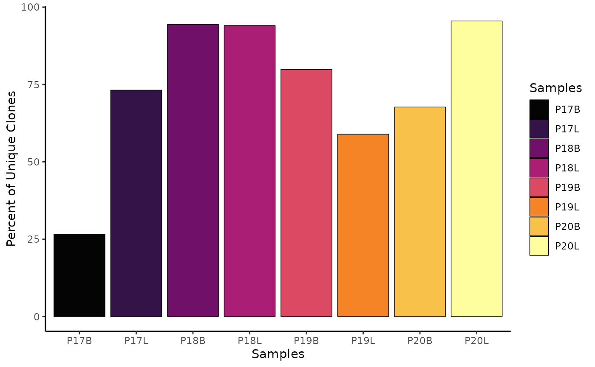
Another option here is to be able to define the visualization by data
classes. Here, we used the combineTCR() list to define the
Type variable as part of the naming structure. We can
use the group.by to specifically use a column in the
data set to organize the visualization.
clonalQuant(combined.TCR,
cloneCall="gene",
group.by = "Type",
scale = TRUE)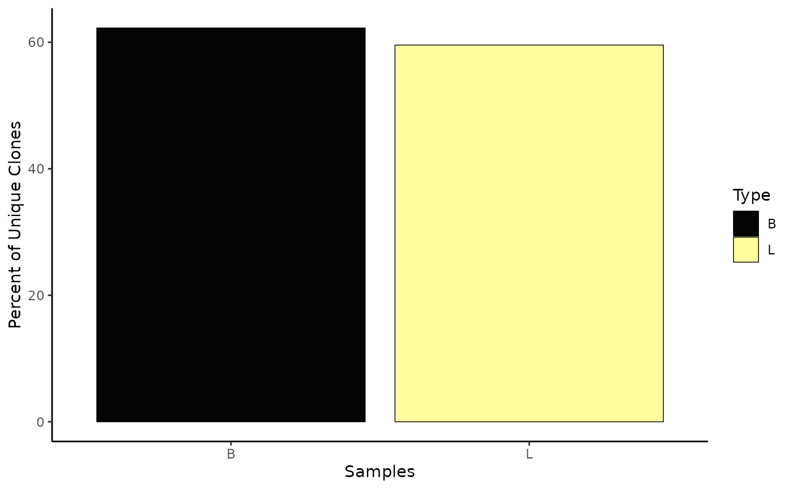
clonalAbundance
We can also examine the relative distribution of clones by abundance.
Here clonalAbundance() will produce a line graph with a
total number of clones by the number of instances within the sample or
run. Like above, we can also group.by this by vectors within the contig
object using the group.by variable in the function.
clonalAbundance(combined.TCR,
cloneCall = "gene",
scale = FALSE)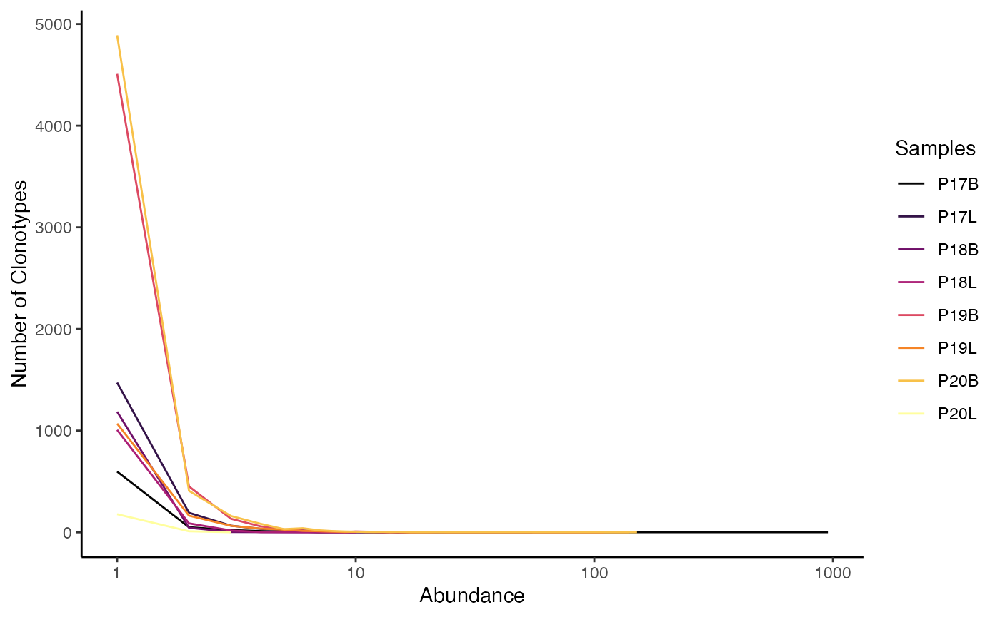
clonalAbundance() output can also be converted into a
density plot, which may allow for better comparisons between different
repertoire sizes, by setting scale = TRUE.
clonalAbundance(combined.TCR,
cloneCall = "gene",
scale = TRUE)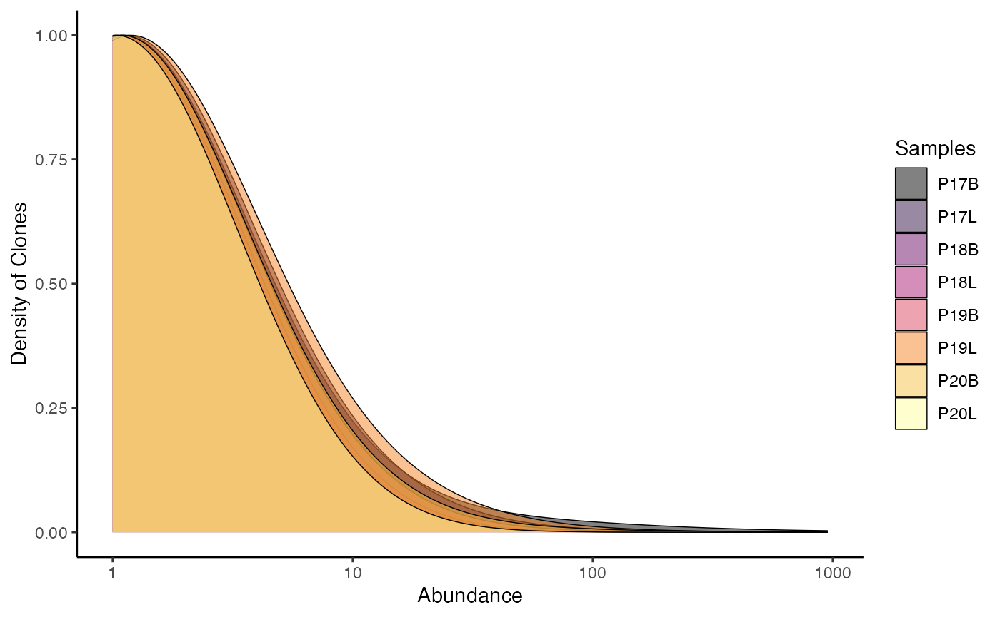
clonalLength
We can look at the length distribution of the CDR3 sequences by
calling the lengtheContig() function. Importantly, unlike
the other basic visualizations, the cloneCall can only
be “nt” or “aa”. Due to the method of
calling clones as outlined above, the length should reveal a multimodal
curve, this is a product of using the NA for the
unreturned chain sequence and multiple chains within a single
barcode.
chain
- “both” for combined chain visualization
- “TRA”, “TRB”, “TRD”, “TRG”, “IGH” or “IGL” to select single chain
clonalLength(combined.TCR,
cloneCall="aa",
chain = "both") 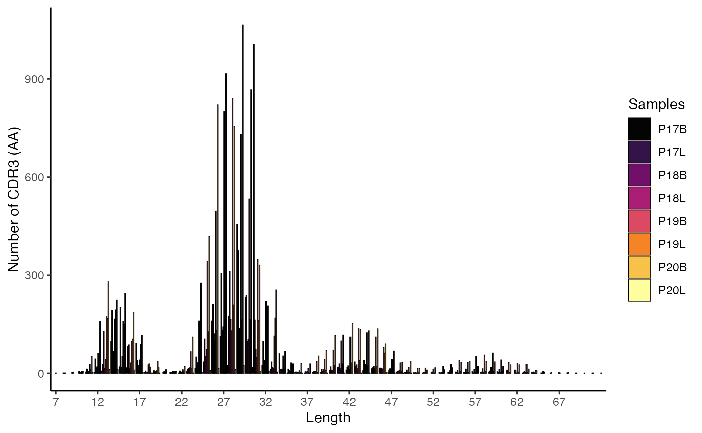
clonalLength(combined.TCR,
cloneCall="aa",
chain = "TRA",
scale = TRUE) 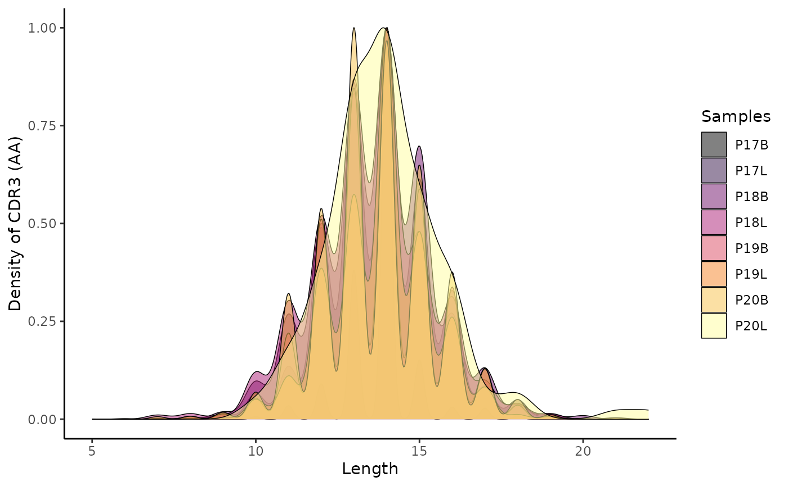
clonalCompare
We can also look at clones between samples and changes in dynamics by
using the clonalCompare() function.
samples
- Can be used to isolate specific samples based on the name of the list element
graph
- “alluvial” - graph imaged below
- “area” - graph by area of the respective clone
top.clones
- The top number of clones to graph, this will be calculated based on the frequency of the individual sample. This can also be left blank.
clones
- Can be used to isolate specific clone sequences, ensure the call matches the sequences you would like to visualize.
highlight.clones
- Specifically color certain clones, other clones will be greyed out.
relabel.clones
- Simplify the isolated clones to numerical designations to allow for a tidier visualization
clonalCompare(combined.TCR,
top.clones = 10,
samples = c("P17B", "P17L"),
cloneCall="aa",
graph = "alluvial")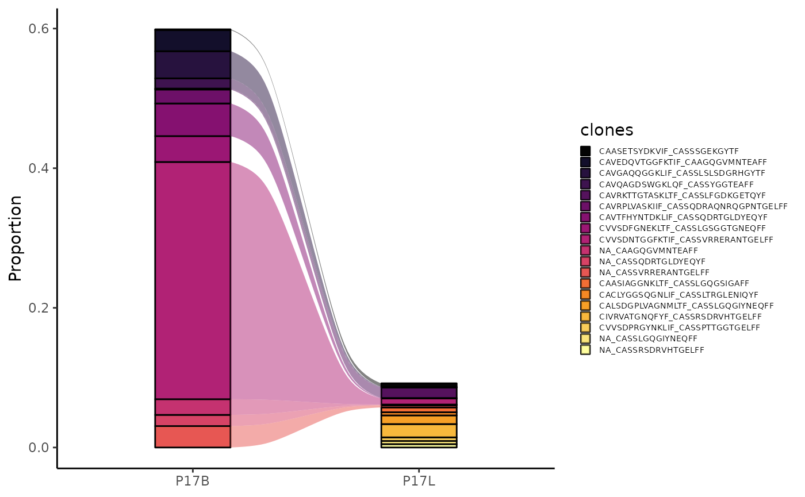
We can also choose to highlight specific clones, such as in the case of “CVVSDNTGGFKTIF_CASSVRRERANTGELFF” and “NA_CASSVRRERANTGELFF” using the highlight.clones parameter. In addition, we can simplify the plot to label the clones as clones 1:19.
clonalCompare(combined.TCR,
top.clones = 10,
highlight.clones = c("CVVSDNTGGFKTIF_CASSVRRERANTGELFF", "NA_CASSVRRERANTGELFF"),
relabel.clones = TRUE,
samples = c("P17B", "P17L"),
cloneCall="aa",
graph = "alluvial")Alternatively, if we only want to show specific clones, we can use the clones parameter.
clonalCompare(combined.TCR,
clones = c("CVVSDNTGGFKTIF_CASSVRRERANTGELFF", "NA_CASSVRRERANTGELFF"),
relabel.clones = TRUE,
samples = c("P17B", "P17L"),
cloneCall="aa",
graph = "alluvial")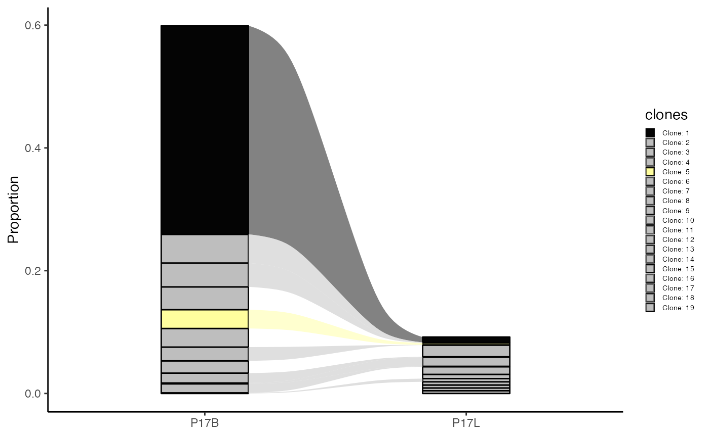
clonalScatter
clonalScatter() will organize two repertoires, quantify
the relative clone sizes, and produce a scatter plot comparing the two
samples.
x.axis and y.axis
- Names of the list element to place on the x-axis and y-axis - so for example “P18B” and “P18L”
dot.size
- “total” to display the total number of clones between the x- and
y-axis
- Name of the list element to use for size calculation
graph
- “proportion” for the relative proportion the clone represents across
all clones
- “count” for the total count of clones by sample
clonalScatter(combined.TCR,
cloneCall ="gene",
x.axis = "P18B",
y.axis = "P18L",
dot.size = "total",
graph = "proportion")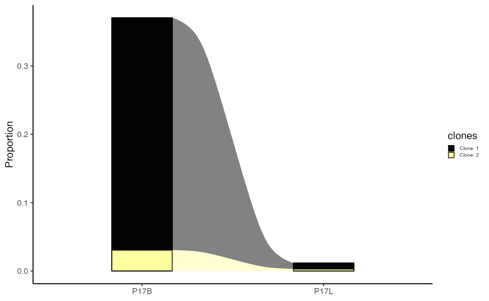
Visualizing Clonal Dynamics
clonalHomeostasis
By examining the clonal space, we effectively look at the relative space occupied by clones at specific proportions. Another way to think about this would be to think of the total immune receptor sequencing run as a measuring cup. In this cup, we will fill liquids of different viscosity - or different numbers of clonal proportions. Clonal space homeostasis asks what percentage of the cup is filled by clones in distinct proportions (or liquids of different viscosity, to extend the analogy). The proportional cut points are set under the cloneSize variable in the function and can be adjusted.
cloneSize
- Rare = 0.0001
- Small = 0.001
- Medium = 0.01
- Large = 0.1
- Hyperexpanded = 1
clonalHomeostasis(combined.TCR,
cloneCall = "gene")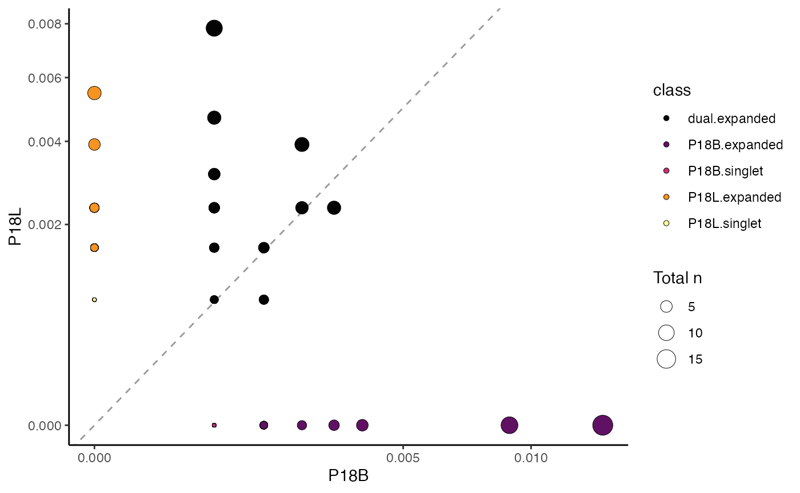
We can reassign the proportional cut points for cloneSize, which can drastically alter the visualization and analysis.
clonalHomeostasis(combined.TCR,
cloneCall = "gene",
cloneSize = c(Rare = 0.001, Small = 0.01, Medium = 0.1, Large = 0.3, Hyperexpanded =
1))In addition, we can use the group.by parameter to look at the relative proportion of clones between groups - such as tissue.
combined.TCR <- addVariable(combined.TCR,
variable.name = "Type",
variables = rep(c("B", "L"), 4))
clonalHomeostasis(combined.TCR,
group.by = "Type",
cloneCall = "gene")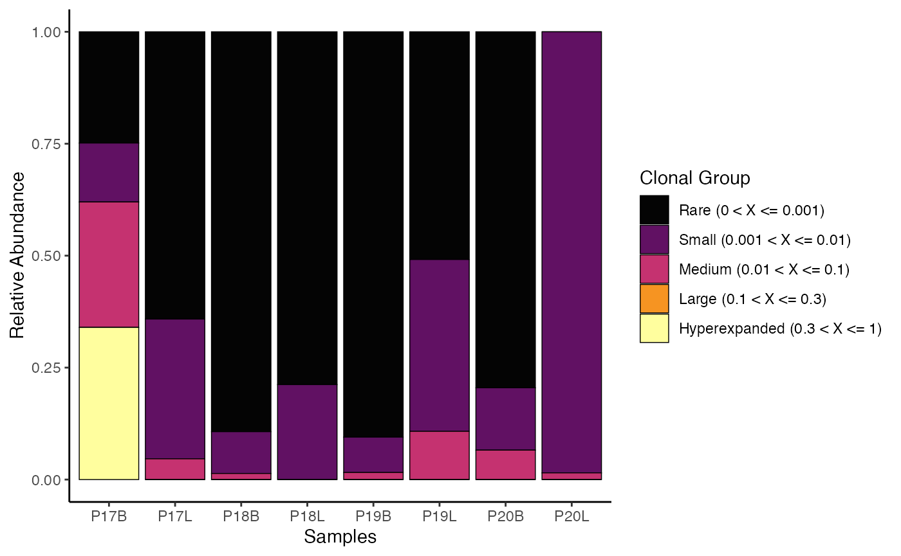
clonalProportion
Like clonal space homeostasis above, clonal proportion places clones
into separate bins. The key difference is that instead of looking at the
relative proportion of the clone to the total, the
clonalProportion() function will rank the clones by total
number and place them into bins.
The clonalSplit represents the ranking of clonotypes by copy or frequency of occurrence, meaning 1:10 are the top 10 clonotypes in each sample. The default bins are under the clonalSplit variable in the function and can be adjusted, but they are as follows at baseline.
clonalSplit
- 10
- 100
- 1000
- 10000
- 30000
- 100000
clonalProportion(combined.TCR,
cloneCall = "gene") 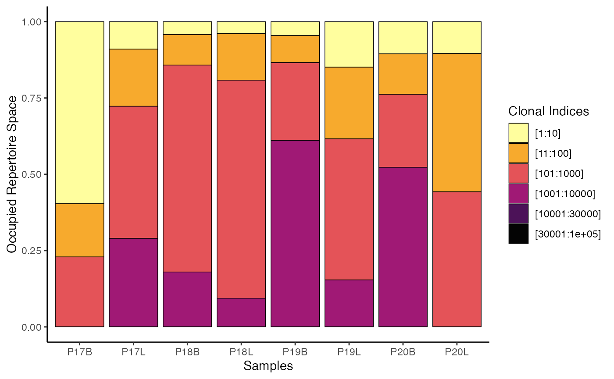
clonalProportion(combined.TCR,
cloneCall = "nt",
clonalSplit = c(1, 5, 10, 100, 1000, 10000)) 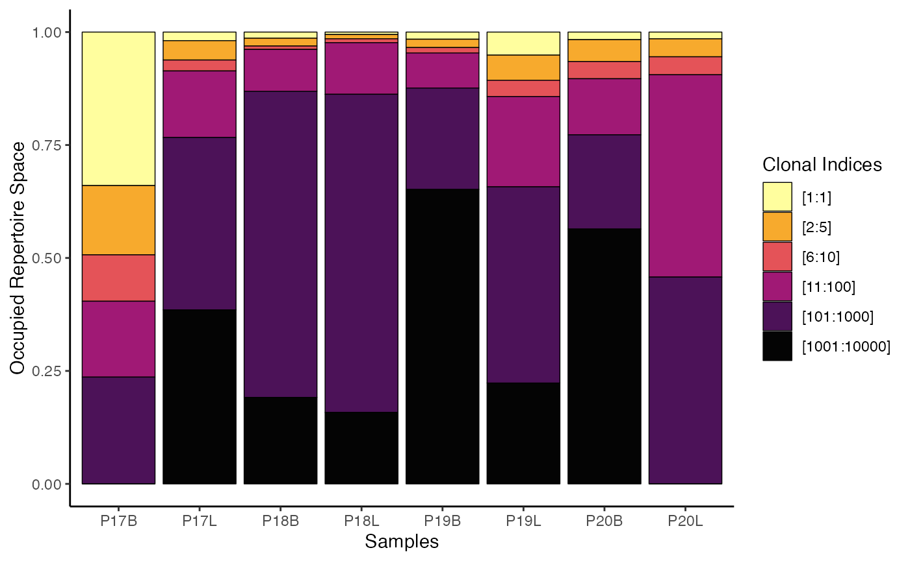
Summarizing Repertoires
vizGenes
A visualization of the relative usage of genes of the TCR or BCR,
using vizGenes(). There is some functional crossover
between vizGenes() and two functions below called
percentGenes() and percentVJ(). But
vizGenes() is more adaptable to allow for comparisons
across chains, scaling, etc.
x.axis
- Gene segment to separate the x-axis, such as “TRAV”, “TRBD”, “IGKJ”
y.axis
- Gene segment or categorical variable to visualize along the y-axis
plot
- “barplot” for a bar chart
- “heatmap” for a heatmap
scale
- TRUE to scale the graph by number of genes per sample
- FALSE to report raw numbers
order
- “gene” to order by gene name
- “variance” to order by variance between the separate variable categories
vizGenes(combined.TCR,
x.axis = "TRBV",
y.axis = NULL,
plot = "barplot",
scale = TRUE)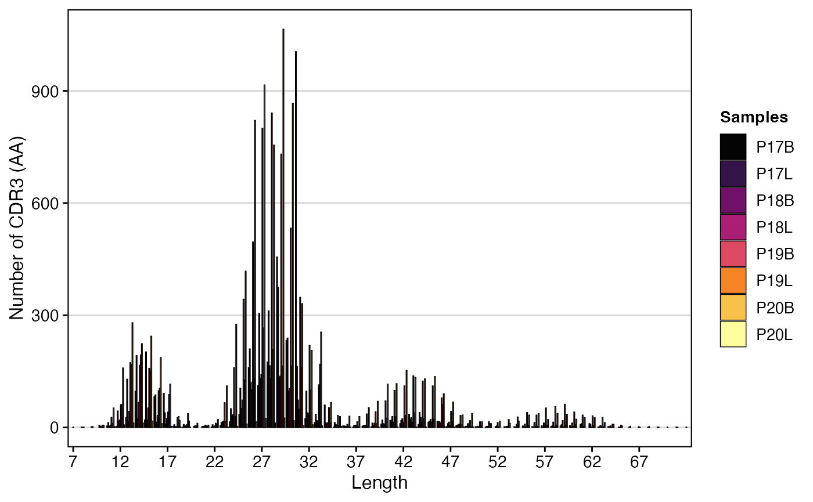
vizGenes() can also be used to look at the usage of
genes in a single chain. For example, say we are interested in the
difference in TRB V and J usage between lung and peripheral blood
samples - we can easily take a look at this using the following
code:
#Peripheral Blood
vizGenes(combined.TCR[c(1,3,5,7)],
x.axis = "TRBV",
y.axis = "TRBJ",
plot = "heatmap",
scale = TRUE)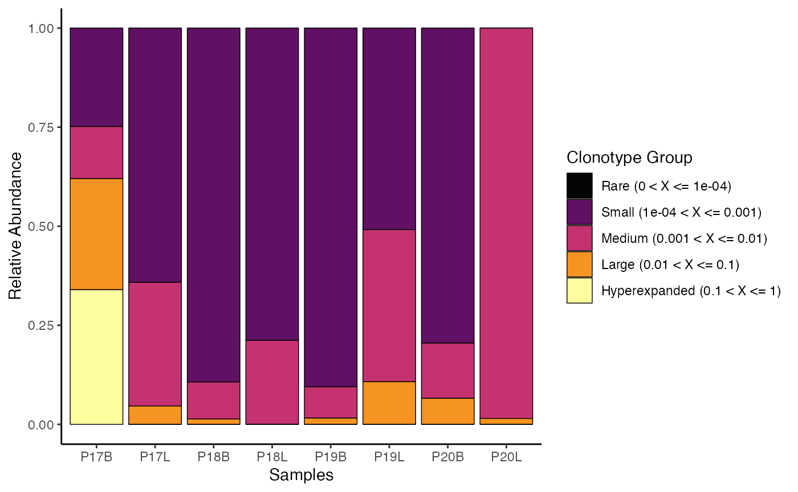
#Lung
vizGenes(combined.TCR[c(2,4,6,8)],
x.axis = "TRBV",
y.axis = "TRBJ",
plot = "heatmap",
scale = TRUE)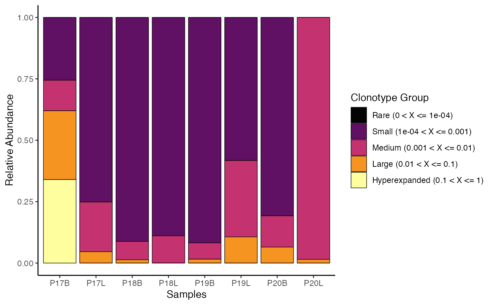
For the P17 patient samples, what if we are interested in chain pairings, we can look at TRBV and TRAV at the same time using them as inputs to x.axis and y.axis.
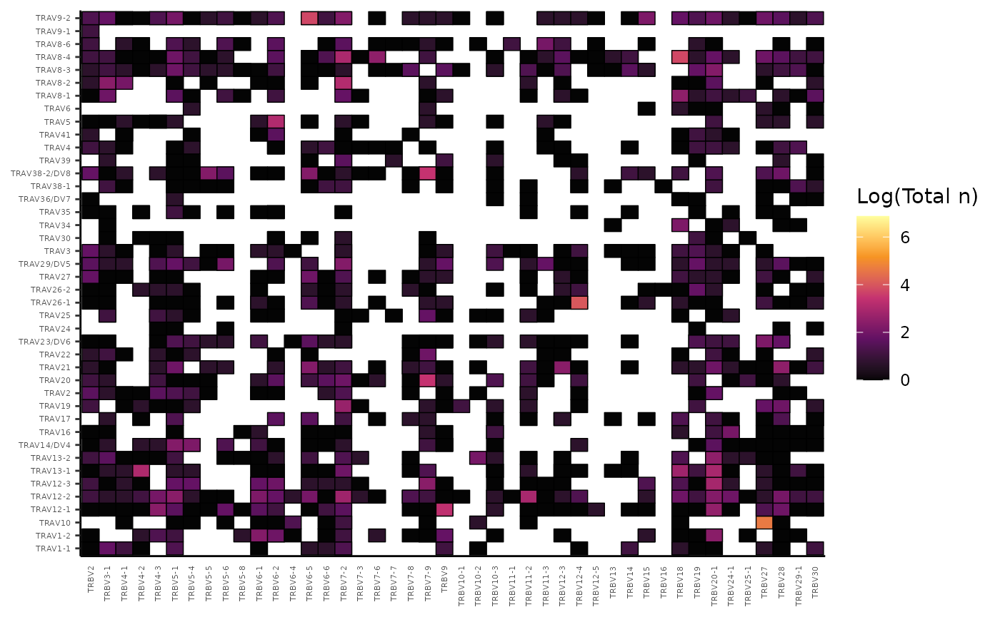
percentAA
Quantify the proportion of amino acids along the cdr3 sequence with
percentAA(). By default, the function will pad the
sequences with NAs up to the maximum of aa.length.
Sequences longer than aa.length will be removed before
visualization (default aa.length = 20).
percentAA(combined.TCR,
chain = "TRB",
aa.length = 20)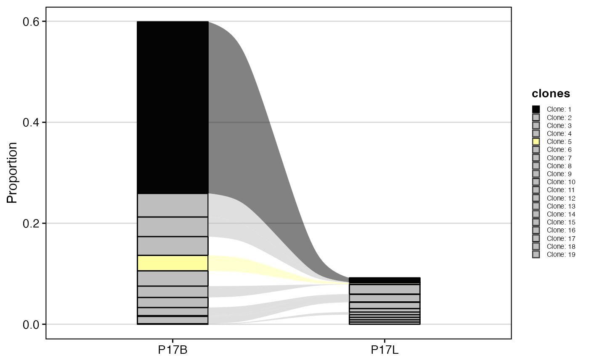
positionalEntropy
We can also quantify the level of entropy/diversity across amino acid
residues along the cdr3 sequence. positionalEntropy()
combines the quantification by residue of percentAA() with
the diversity calls in clonalDiversity(). Importantly,
because diversity can be affected by size of sample, similar to
clonalDiversity(), positionalEntropy() will
also downsample/bootstrap the calculation. Positions without variance
will have a value reported as 0 for the purposes of comparison.
method
- “shannon” - Shannon Diversity
- “inv.simpson” - Inverse Simpson Diversity
- “norm.entropy” - Normalized Entropy
positionalEntropy(combined.TCR,
chain = "TRB",
aa.length = 20)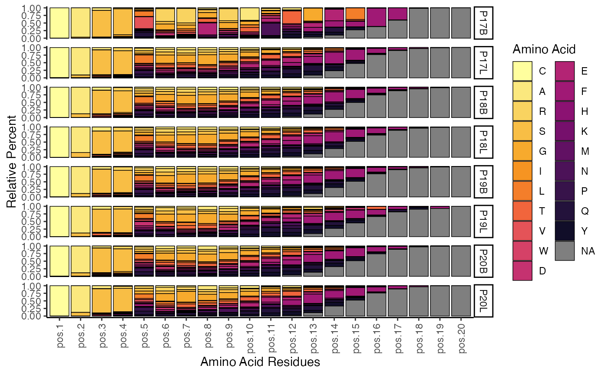
percentGenes
Quantify the proportion of V or J gene usage with
percentGenes(). Like percentAA(), we select
the chain of interest and then indicate the gene of interest with the
gene parameter. Two major limitations of
percentGenes() are, 1) the function quantifies only V or J
genes, and 2) the quantification of the genes are limited to all the V
or J genes seen across the samples, not all possible V or J genes.
percentGenes(combined.TCR,
chain = "TRB",
gene = "Vgene")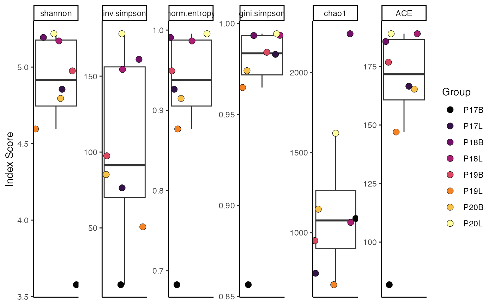
We can also use the output percentGenes() for
dimensional reduction to summarise the gene usage by sample. This can be
done with a simple principal component analysis (below) or even more
complex reductions.
df.genes <- percentGenes(combined.TCR,
chain = "TRB",
gene = "Vgene",
exportTable = TRUE)
#Performing PCA
pc <- prcomp(df.genes)
#Getting data frame to plot from
df <- as.data.frame(cbind(pc$x[,1:2], rownames(df.genes)))
df$PC1 <- as.numeric(df$PC1)
df$PC2 <- as.numeric(df$PC2)
#Plotting
ggplot(df, aes(x = PC1, y = PC2)) +
geom_point(aes(fill =df[,3]), shape = 21, size = 5) +
guides(fill=guide_legend(title="Samples")) +
scale_fill_manual(values = hcl.colors(nrow(df), "inferno")) +
theme_classic() 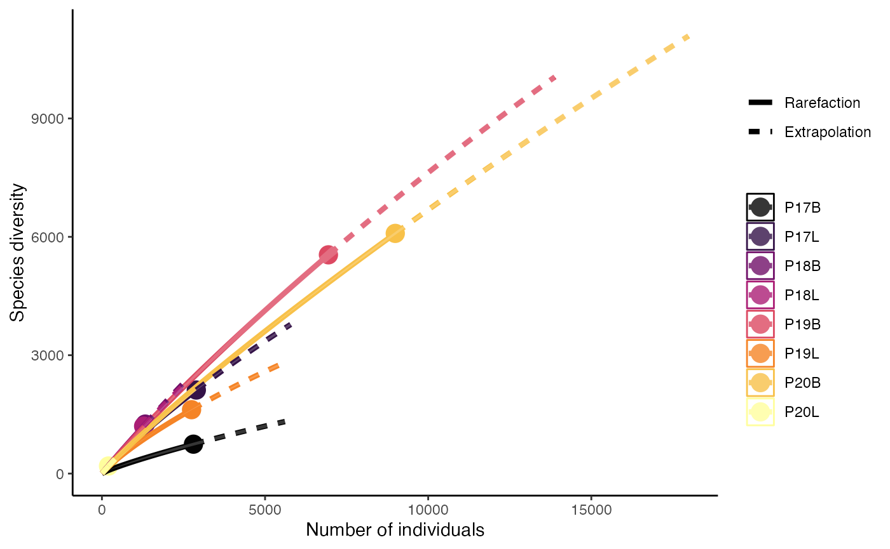
percentVJ
Quantify the proportion of V and J gene usage with
percentVJ(). Like percentGenes(), this
function will quantify the percentage of V and J paired together across
individual repertoires. The output can be visualized using a heatmap or
as input for further dimensional reduction.
percentVJ(combined.TCR,
chain = "TRB")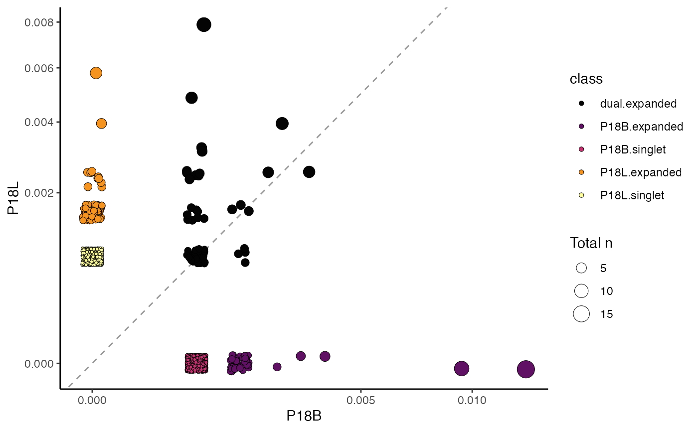
df.genes <- percentVJ(combined.TCR,
chain = "TRB",
exportTable = TRUE)
#Performing PCA
pc <- prcomp(df.genes)
#Getting data frame to plot from
df <- as.data.frame(cbind(pc$x[,1:2], rownames(df.genes)))
df$PC1 <- as.numeric(df$PC1)
df$PC2 <- as.numeric(df$PC2)
#Plotting
ggplot(df, aes(x = PC1, y = PC2)) +
geom_point(aes(fill =df[,3]), shape = 21, size = 5) +
guides(fill=guide_legend(title="Samples")) +
scale_fill_manual(values = hcl.colors(nrow(df), "inferno")) +
theme_classic() 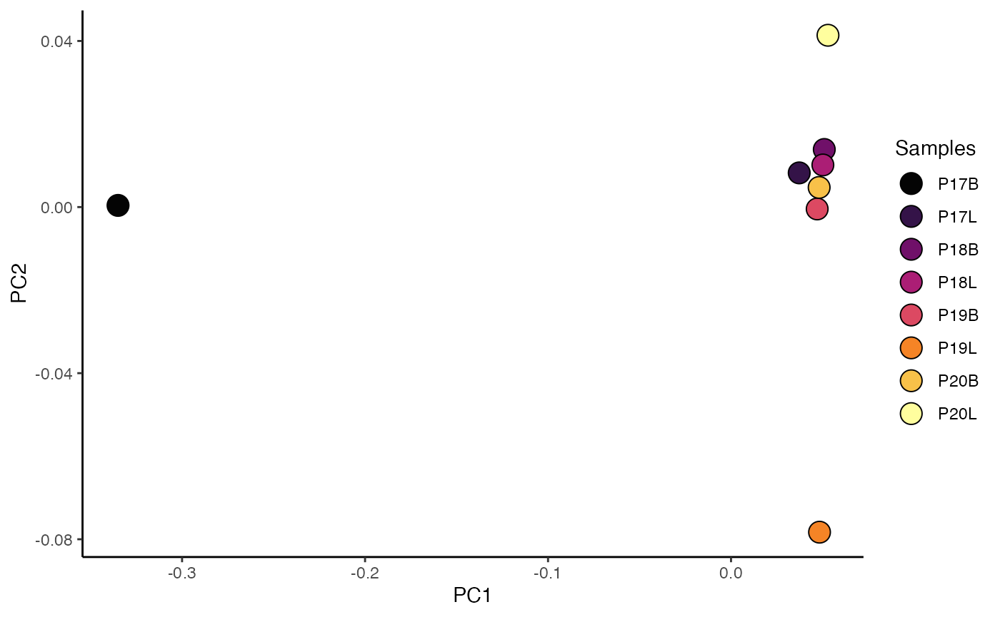
percentKmer
Another quantification of the composition of the CDR3 sequence is to define motifs by sliding across the amino acid or nucleotide sequences at set intervals resulting in substrings or kmers.
motif.length
- Numerical value for the length of the kmer.
top.motifs
- Display the most variable genes determined by mean absolute deviation (MAD).
percentKmer(combined.TCR,
cloneCall = "aa",
chain = "TRB",
motif.length = 3,
top.motifs = 25)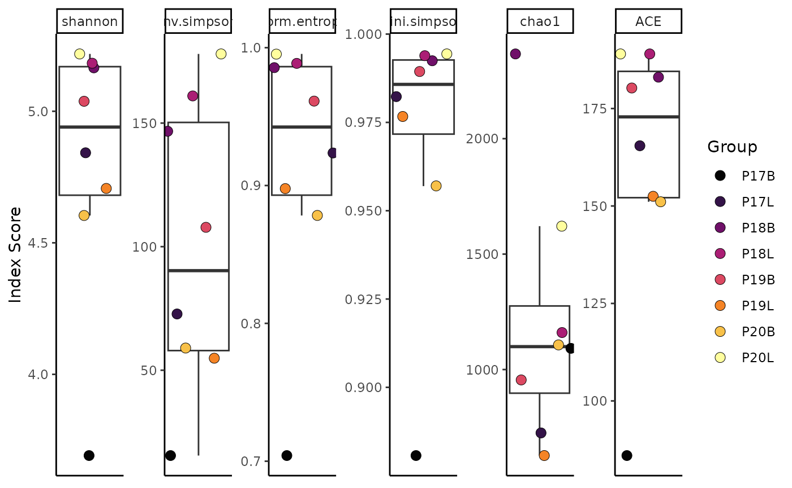
percentKmer(combined.TCR,
cloneCall = "nt",
chain = "TRB",
motif.length = 3,
top.motifs = 25)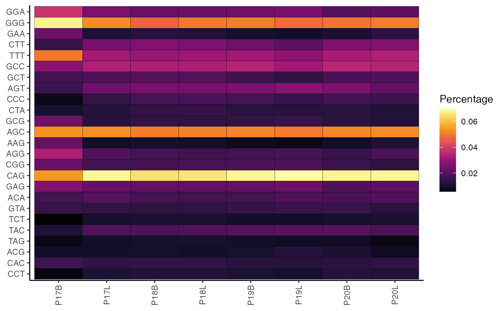
Comparing Clonal Diversity and Overlap
clonalDiversity
Diversity can also be measured for samples or by other variables. Diversity metrics calculated, include: “shannon”, “inv.simpson”, “norm.entropy”, “gini.simpson”, “chao1”, and “ACE”. Please see the manual for more information on each metric and the underlying calculations.
Inherent in diversity calculations is a bias for increasing diversity
with increasing repertoire size. clonalDiversity() will
automatically downsample to the smallest repertoire size and perform
bootstrapping to return the mean diversity estimates. If the output of
diversity values are strange or minimally variable, it is likely due to
a sample with small repertoire size.
n.boots
The number of calculations to perform (default =
100).
return.boots
- TRUE: Return all the calculations.
- FALSE: Return only the mean values (default).
skip.boots
Skip the bootstrapping calculations.
clonalDiversity(combined.TCR,
cloneCall = "gene",
n.boots = 20)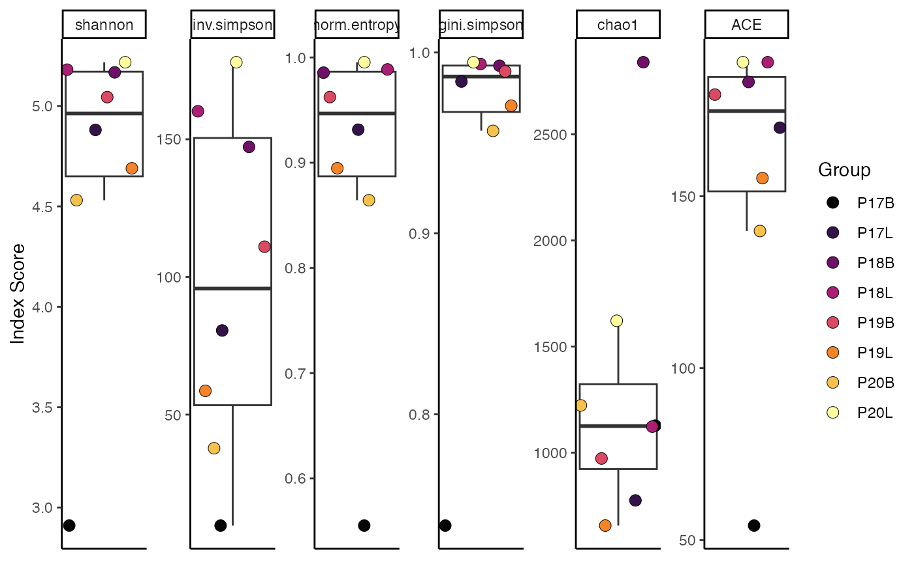
As a default, clonalDiversity() will return all the
metrics calculated - “shannon”,
“inv.simpson”, “norm.entropy”,
“gini.simpson”, “chao1”, and
“ACE”. Selecting a single or a subset of these methods
using the metrics parameter.
#Return only a subset of metrics
clonalDiversity(combined.TCR,
metrics = c("shannon", "ACE"),
cloneCall = "gene",
n.boots = 20)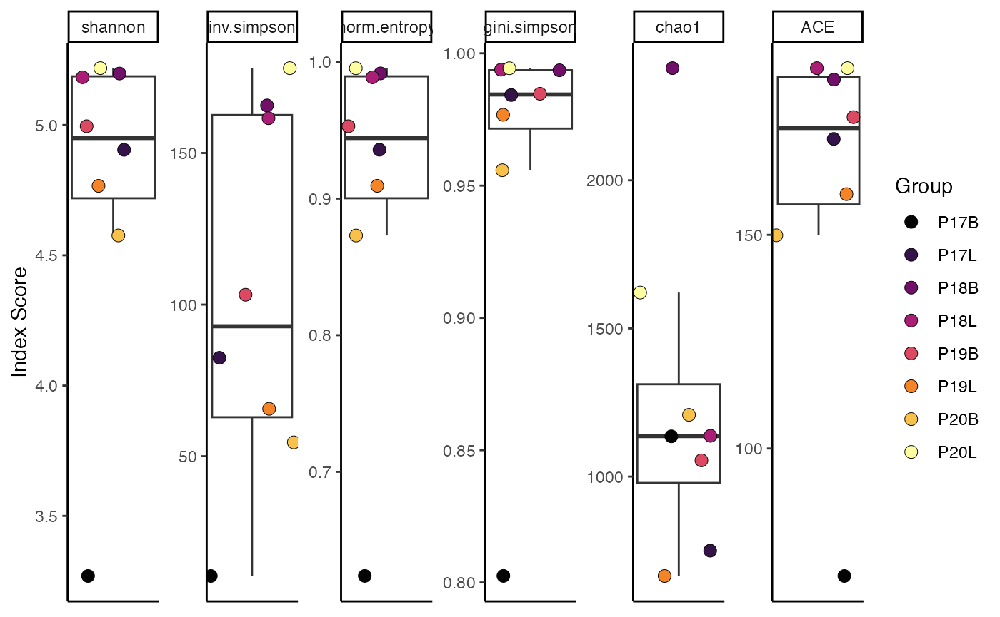
clonaRarefaction
We can also use Hill numbers to estimate the rarefaction, or estimating species richness, using the the abundance of clones across groupings. Underlying the rarefaction calculation is the use of observed receptor of abundance to compute diversity.
hill.numbers
- 0 - species-richness
- 1 - Shannon
- 2 - Simpson
plot.type
- 1 - sample-size-based rarefaction/extrapolation
- 2 - sample completeness curve
- 3 - coverage-based rarefaction/extrapolation curve
This function relies on the iNEXT with the accompanying manuscript. Like the other wrapping functions in scRepertoire, please cite the original work. The sample completeness curve (plot.type = 2), may not show full sample coverage due to the size/diversity of the input data.
Rarefaction using Species Richness (q = 0)
clonalRarefaction(combined.TCR,
plot.type = 1,
hill.numbers = 0,
n.boots = 2)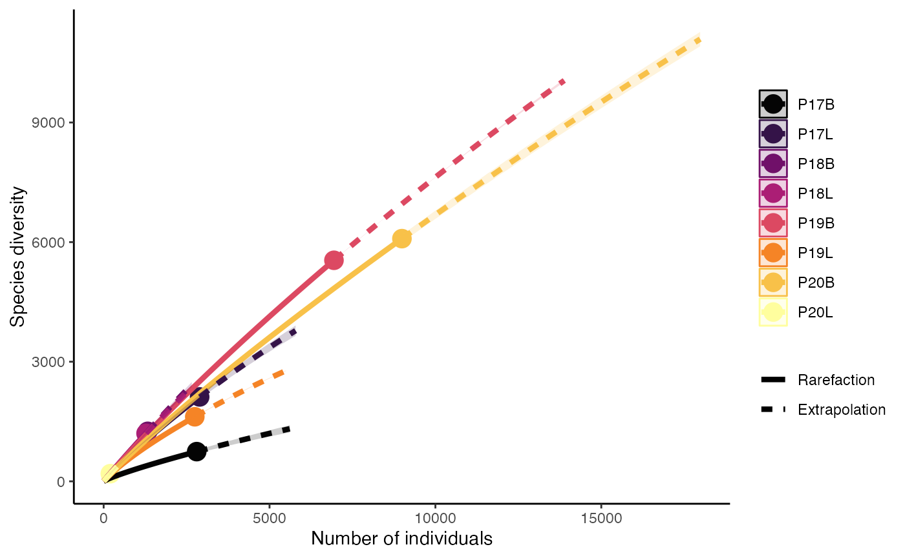
clonalRarefaction(combined.TCR,
plot.type = 2,
hill.numbers = 0,
n.boots = 2)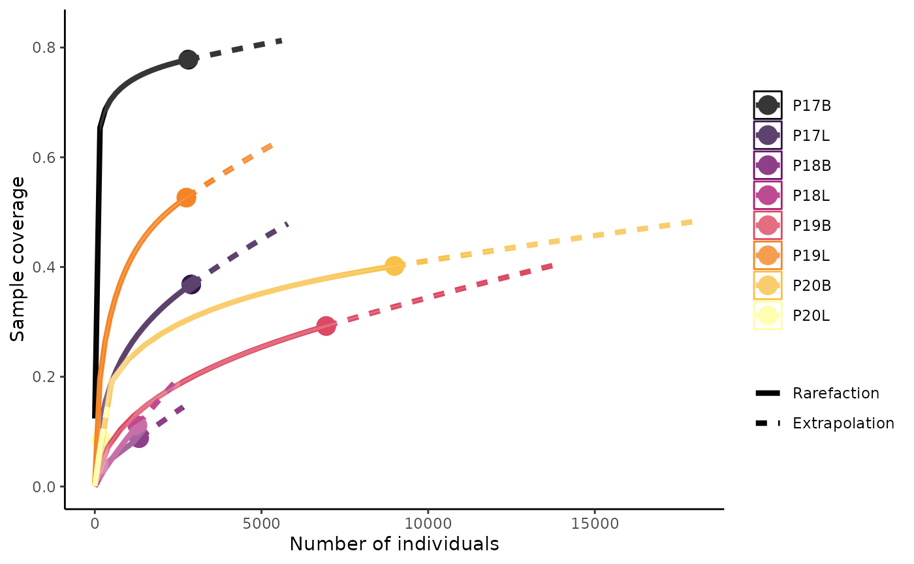
clonalRarefaction(combined.TCR,
plot.type = 3,
hill.numbers = 0,
n.boots = 2)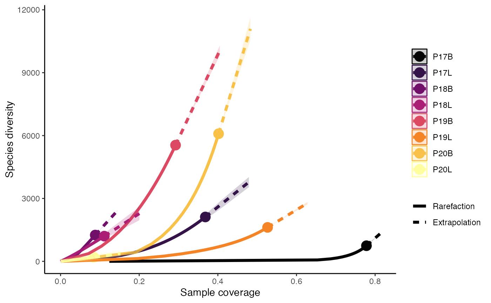
Rarefaction using Shannon Diversity (q = 1)
clonalRarefaction(combined.TCR,
plot.type = 1,
hill.numbers = 1,
n.boots = 2)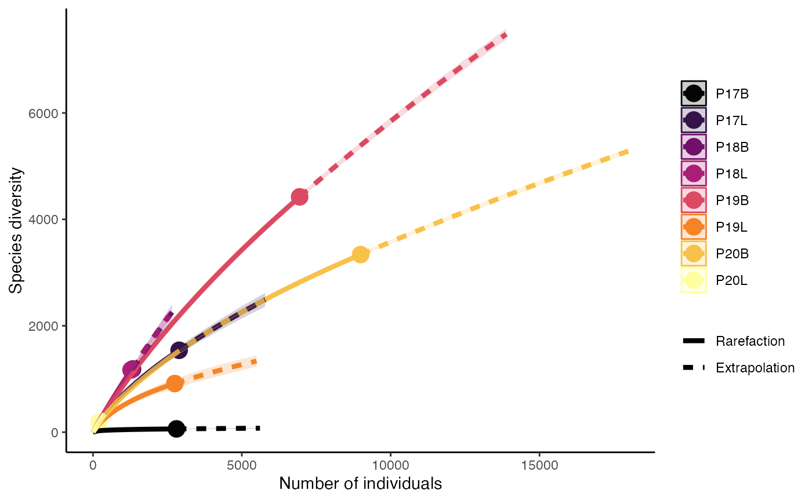
clonalRarefaction(combined.TCR,
plot.type = 2,
hill.numbers = 1,
n.boots = 2)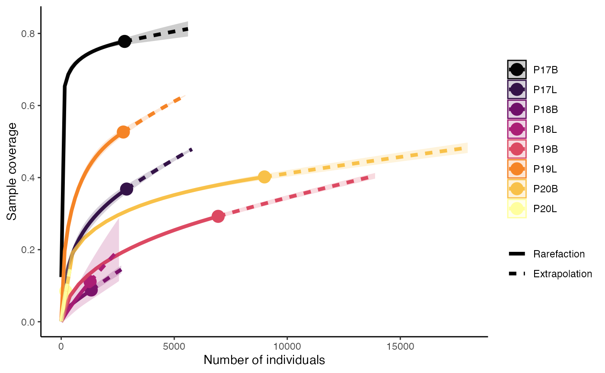
clonalRarefaction(combined.TCR,
plot.type = 3,
hill.numbers = 1,
n.boots = 2)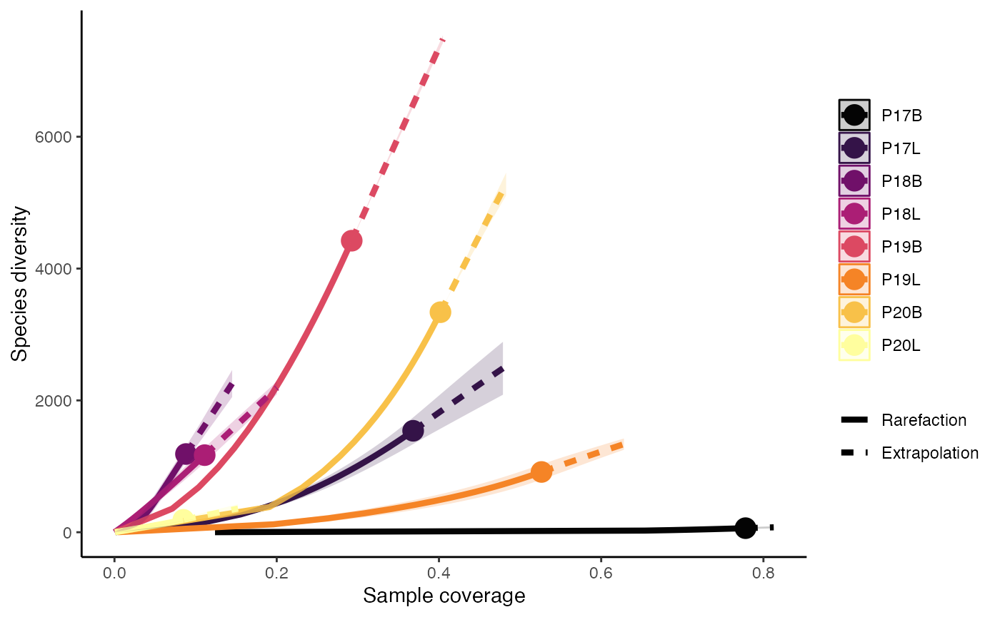
clonalSizeDistribution
Another method for modeling the repertoire distribution is a discrete gamma-GPD spliced threshold model, proposed by Koch et al. The spliced model models the repertoire and allows for the application of a power law distribution for larger clonal-expanded sequences and a Poisson distribution for smaller clones. After fitting the models, repertoires can be compared using Euclidean distance.
If using this function, please read/cite Koch et al. and check out the powerTCR R package.
clonalSizeDistribution(combined.TCR,
cloneCall = "aa",
method= "ward.D2")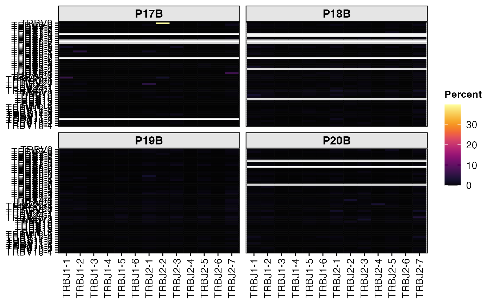
clonalOverlap
If you are interested in measures of similarity between the samples
loaded into scRepertoire, using clonalOverlap() can assist
in the visualization.
The underlying clonalOverlap() calculation varies by the
method parameter, more information on the exact
calculations are available in the manual.
method
- “overlap” - overlap coefficient
- “morisita” - Morisita’s overlap index
- “jaccard” - Jaccard index
- “cosine” - cosine similarity
- “raw” - exact number of overlapping clones
clonalOverlap(combined.TCR,
cloneCall = "strict",
method = "morisita")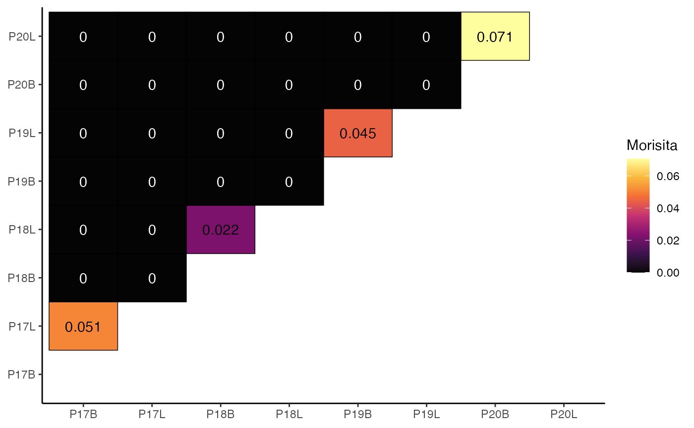
clonalOverlap(combined.TCR,
cloneCall = "strict",
method = "raw")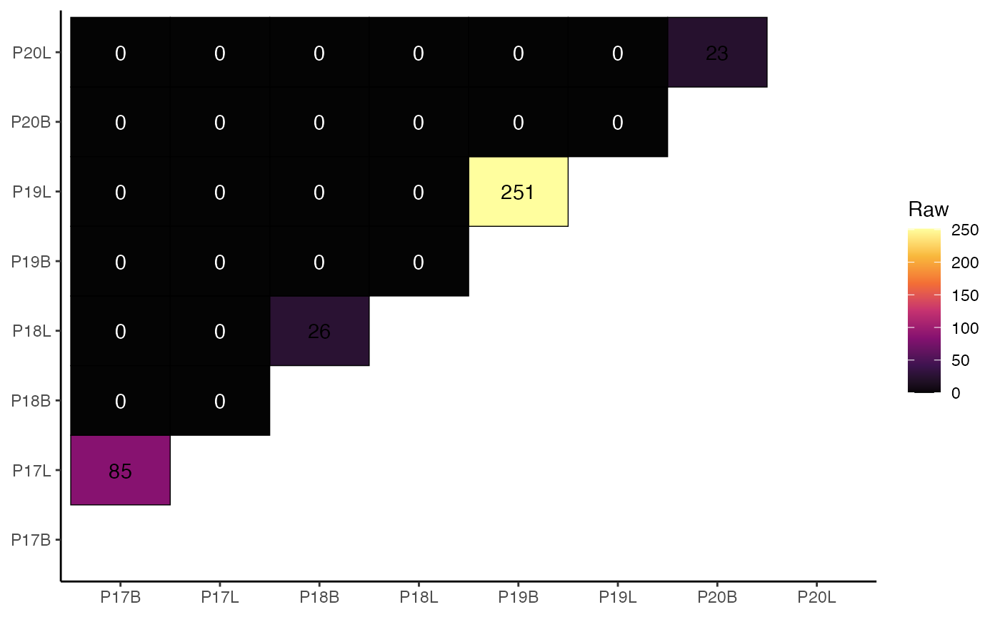
Combining Clones and Single-Cell Objects
The data in the scRepertoire package is derived from a study of acute
respiratory stress disorder in the context of bacterial and COVID-19
infections. The internal single cell data (scRep_example())
built in to scRepertoire is randomly sampled 500 cells from the fully
integrated Seurat object to minimize the package size. We will use both
Seurat and Single-Cell Experiment (SCE) with scater to perform further
visualizations in tandem.
Preprocessed Single-Cell Object
scRep_example <- get(data("scRep_example"))
#Making a Single-Cell Experiment object
sce <- Seurat::as.SingleCellExperiment(scRep_example)combineExpression
After processing the contig data into clones via
combineBCR() or combineTCR(), we can add the
clonal information to the single-cell object using
combineExpression().
Importantly, the major requirement for the attachment is matching contig cell barcodes and barcodes in the row names of the meta data of the Seurat or Single-Cell Experiment object. If these do not match, the attachment will fail. Based on ease, we suggest making changes to the single-cell object barcodes.
Calculating cloneSize
Part of combineExpression() is calculating the clonal
frequency and proportion, placing each clone into groups called
cloneSize. The default cloneSize
argument uses the following bins: c(Rare = 1e-4, Small = 0.001, Medium =
0.01, Large = 0.1, Hyperexpanded = 1), which can be modified to include
more/less bins or different names.
Clonal frequency and proportion is dependent on the repertoires being
compared, which we can modify the calculation using the
group.by parameter, such as grouping by the
Patient variable from above. If group.by is
not set, combineExpression() will calculate clonal
frequency, proportion, and cloneSize as a function of
individual sequencing runs. In addition, cloneSize can
use the frequency of clones when proportion =
FALSE.
We can look at the default cloneSize groupings using the Single-Cell
Experiment object we just created above with using
group.by set to the sample variable used in
combineTCR() :
sce <- combineExpression(combined.TCR,
sce,
cloneCall="gene",
group.by = "sample",
proportion = TRUE)
#Define color palette
colorblind_vector <- hcl.colors(n=7, palette = "inferno", fixup = TRUE)
plotUMAP(sce, colour_by = "cloneSize") +
scale_color_manual(values=rev(colorblind_vector[c(1,3,5,7)]))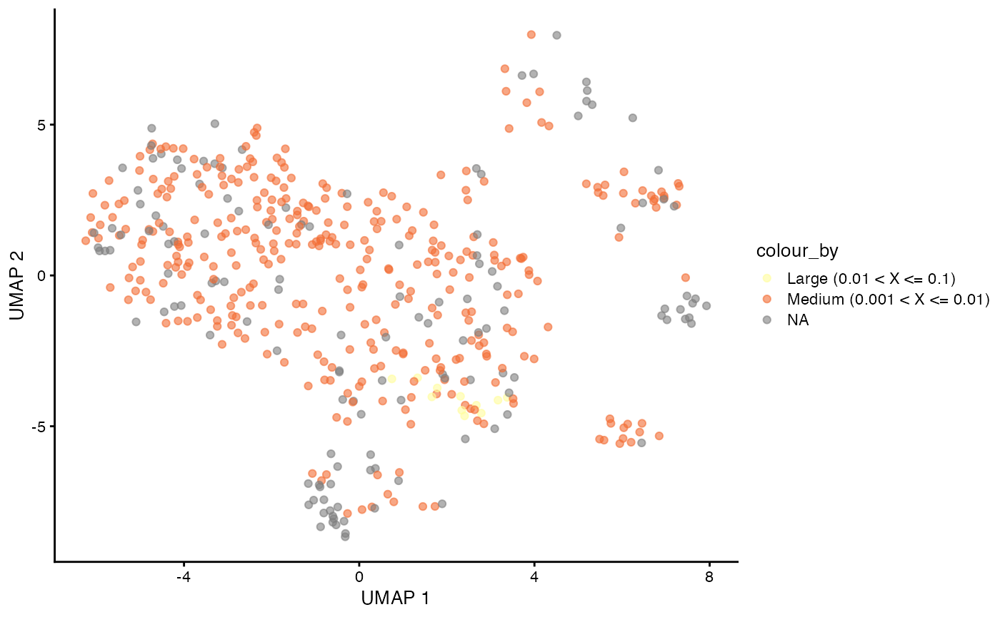
Alternatively, if we want cloneSize to be based on
the frequency of the clone, we can set proportion =
FALSE and we will need to change the cloneSize bins to
integers. If we have not inspected our clone data, setting the upper
limit of the clonal frequency might be difficult -
combineExpression() will automatically adjust the upper
limit to fit the distribution of the frequencies. To demonstrate this,
check out the Seurat object below:
scRep_example <- combineExpression(combined.TCR,
scRep_example,
cloneCall="gene",
group.by = "sample",
proportion = FALSE,
cloneSize=c(Single=1, Small=5, Medium=20, Large=100, Hyperexpanded=500))
Seurat::DimPlot(scRep_example, group.by = "cloneSize") +
scale_color_manual(values=rev(colorblind_vector[c(1,3,4,5,7)]))
Combining both TCR and BCR
If we have TCR/BCR enrichment or want to add info for gamma-delta and
alpha-beta T cells, we can make a single list and use
combineExpression().
Major note if there are duplicate barcodes (if a
cell has both Ig and TCR), the immune receptor information will not be
added. It might be worth checking cluster identities and removing
incongruent barcodes in the products of combineTCR() and
combineBCR().
As an anecdote, the testing data we used to improve this function had 5-6% of barcode overlap.
#This is an example of the process, which will not be evaluated during knit
TCR <- combineTCR(...)
BCR <- combineBCR(...)
list.receptors <- c(TCR, BCR)
seurat <- combineExpression(list.receptors,
seurat,
cloneCall="gene",
proportion = TRUE)Visualizations for Single-Cell Objects
clonalOverlay
Using the dimensional reduction graphs as a reference, we can also
generate an overlay of the position of clonally-expanded cells using
clonalOverlay().
reduction
- The dimensional reduction for the visualization, (default = “pca”)
cut.category
- Use of “clonalFrequency” or “clonalProportion” to filter the overlay
cutpoint
- lowest clonal frequency or proportion to generate the contour plot
bins
- the number of contours to draw
clonalOverlay() can be used to look across all cells or
faceted by a meta data variable using facet.by. The
overall dimensional reduction will be maintained as we facet, while the
contour plots will adjust based on the facet.by
variable. The coloring of the dot plot is based on the active identity
of the single-cell object.
This visualization was authored by Dr. Francesco Mazziotta and inspired by Drs. Carmona and Andreatta and their work with ProjectTIL, which is a great pipeline to annotated T cell subtypes.
#Adding patient information
scRep_example$Patient <- substr(scRep_example$orig.ident, 1,3)
clonalOverlay(scRep_example,
reduction = "umap",
cutpoint = 1,
bins = 10,
facet.by = "Patient") +
guides(color = "none")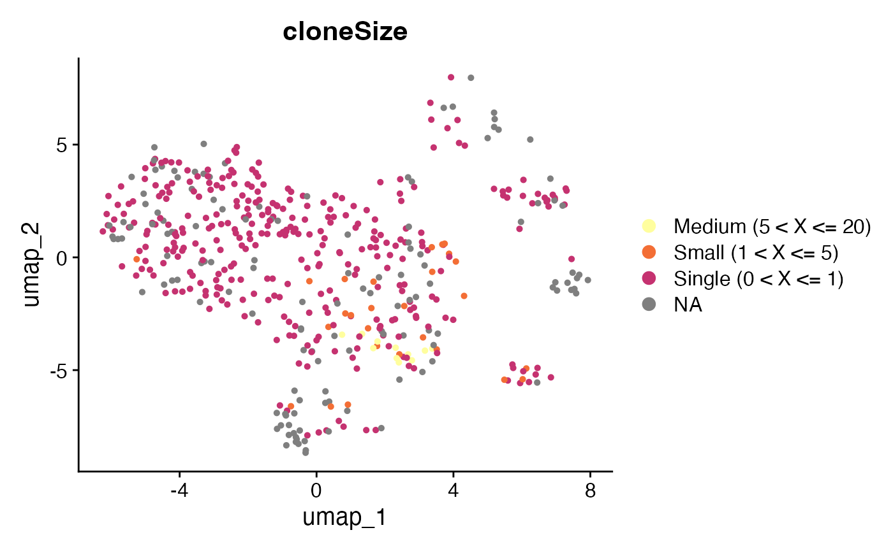
clonalNetwork
Similar to clonalOverlay(), we can look at the network
interaction of clones shared between clusters along the single-cell
dimensional reduction using clonalNetwork(). This function
shows the relative proportion of clones from the starting node, with the
ending node indicated by the arrow.
Filtering for clones can be accomplished using 3 methods:
filter.clones
- Select a number to isolate the clones comprising the top n number of
cells (e.g., filter.clones = 2000)
- Select “min” to make sure all groups are scaled to the size of the minimum group
filter.identity
- For the identity chosen to visualize, show the to and from network connections for a single group
filter.proportion
- Remove clones that comprise less than a certain proportion of clones in groups.
filter.graph
- Remove the reciprocal edges from the half of the graph, allowing for cleaner visualization.
#ggraph needs to be loaded due to issues with ggplot
library(ggraph)
#No Identity filter
clonalNetwork(scRep_example,
reduction = "umap",
group.by = "seurat_clusters",
filter.clones = NULL,
filter.identity = NULL,
cloneCall = "aa")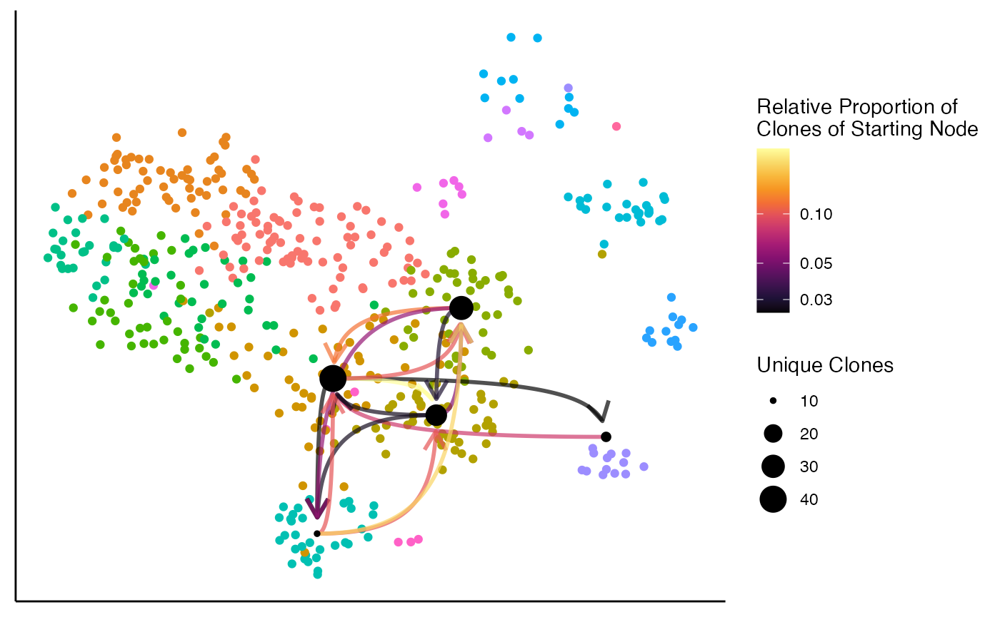
We can look at the clonal relationships relative to a single cluster using the filter.identity parameter.
#Examining Cluster 3 only
clonalNetwork(scRep_example,
reduction = "umap",
group.by = "seurat_clusters",
filter.identity = 3,
cloneCall = "aa")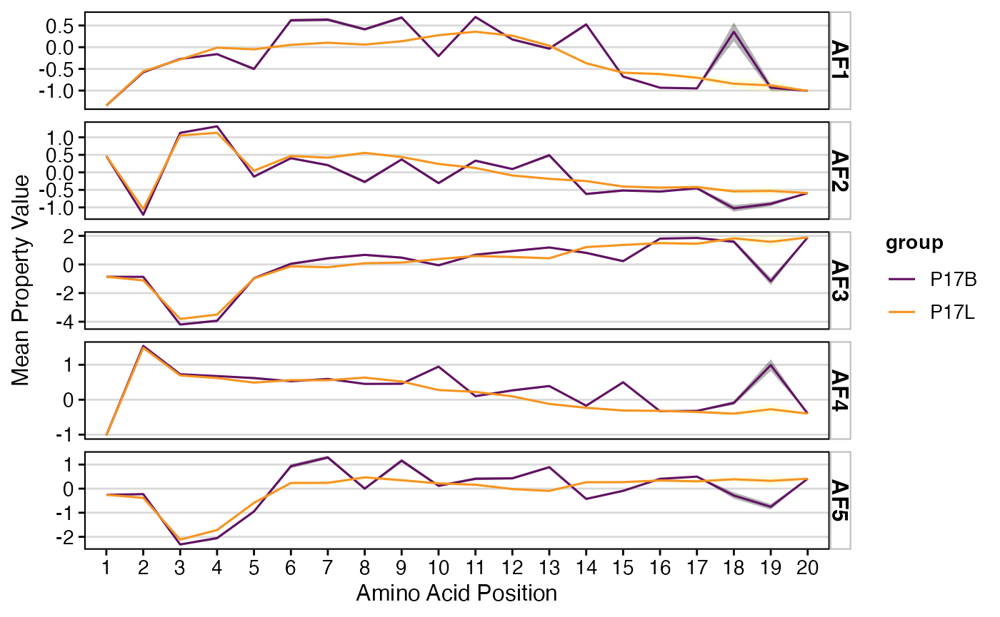
We can also use exportClones parameter to quickly get clones that are shared across multiple identity groups, along with the total number of clones in the data set.
shared.clones <- clonalNetwork(scRep_example,
reduction = "umap",
group.by = "seurat_clusters",
cloneCall = "aa",
exportClones = TRUE)
head(shared.clones)## # A tibble: 6 × 2
## clone sum
## <chr> <int>
## 1 CVVSDNTGGFKTIF_CASSVRRERANTGELFF 11
## 2 CAELNQAGTALIF_CASSQAPFSTSGELFF 3
## 3 CASLSGSARQLTF_CASSSTVAGEQYF 3
## 4 CALSGSRDDKIIF_NA 2
## 5 CARKVRDSSYKLIF_CASSDSGYNEQFF 2
## 6 CASLSGSARQLTF_CASSPTVAGEQFF 2highlightClones
We can also look at the clones by calling specific sequences in the
highlightclones() below. In order to highlight the clones,
we first need to use the cloneCall, the type of
sequence we will be using, and then the specific sequences themselves
using sequence. Below, we can see the steps to
highlight the most prominent sequences
CAERGSGGSYIPTF_CASSDPSGRQGPRWDTQYF, and
CARKVRDSSYKLIF_CASSDSGYNEQFF.
scRep_example <- highlightClones(scRep_example,
cloneCall= "aa",
sequence = c("CAERGSGGSYIPTF_CASSDPSGRQGPRWDTQYF",
"CARKVRDSSYKLIF_CASSDSGYNEQFF"))
Seurat::DimPlot(scRep_example, group.by = "highlight") +
ggplot2::theme(plot.title = element_blank())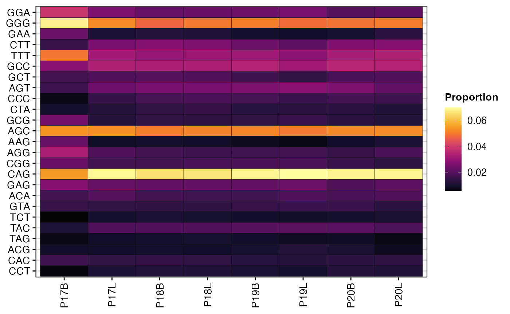
clonalOccupy
We can also look at the count of cells by cluster assigned into
specific frequency ranges by using the clonalOccupy()
function and selecting the x.axis to display cluster or
other variables in the meta data of the single cell object.
proportion
- can be used to look at relative level groupings
label
- will still return the absolute number of clones
clonalOccupy(scRep_example,
x.axis = "seurat_clusters")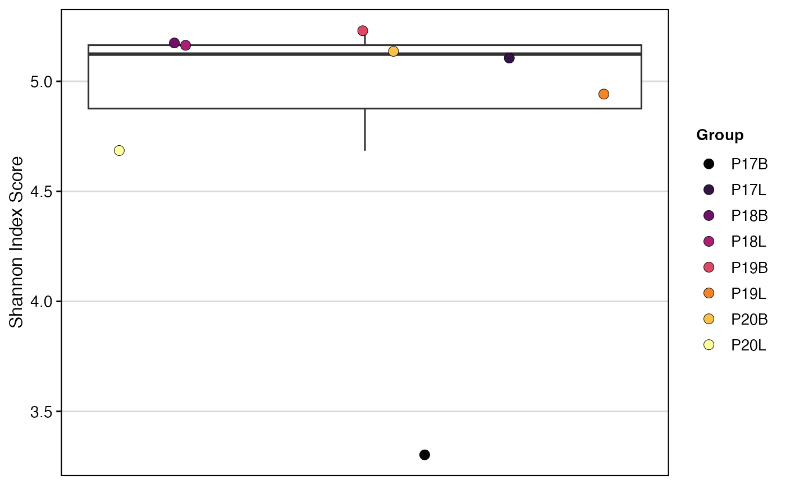
clonalOccupy(scRep_example,
x.axis = "ident",
proportion = TRUE,
label = FALSE)
alluvialClones
After the metadata has been modified, we can look at clones across
multiple categories using the alluvialClones() function. We
are able to use the plots to examine the interchange of categorical
variables. Because this function will produce a graph with each clone
arranged by called stratification, this will take some time depending on
the size of the repertoire.
To understand the basic concepts of this graphing method and the ggalluvial R package, we recommend reading this post.
#Adding type information
scRep_example$Type <- substr(scRep_example$orig.ident, 4,4)
alluvialClones(scRep_example,
cloneCall = "aa",
y.axes = c("Patient", "ident", "Type"),
color = c("CVVSDNTGGFKTIF_CASSVRRERANTGELFF", "NA_CASSVRRERANTGELFF")) +
scale_fill_manual(values = c("grey", colorblind_vector[3]))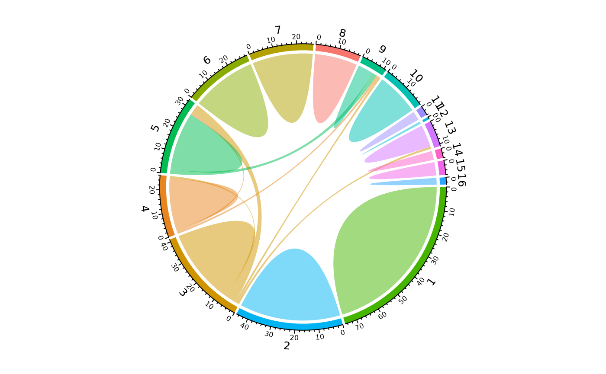
alluvialClones(scRep_example,
cloneCall = "gene",
y.axes = c("Patient", "ident", "Type"),
color = "ident") 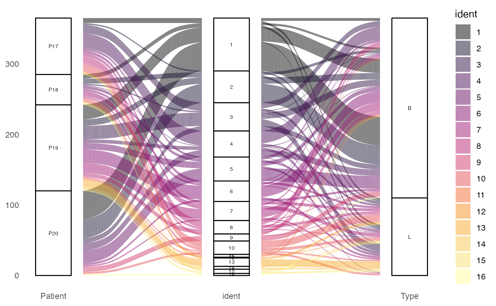
getCirclize
Like alluvial graphs, we can also visualize the interconnection of clusters using the chord diagrams from the circlize R package.
The first step is getting the data frame output to feed into the
chordDiagram() function in circlize, which can be done
using getCirclize().
This will calculate the relative number of clones shared based on the
group.by variable using the product of
combineExpression(). It is important to note
getCirclize() will create a matrix the size of the
group.by variable and then simplify into instructions
to be read by the circlize R package. The output is the total number of
unique and shared clones by the group.by variable.
library(circlize)
library(scales)
circles <- getCirclize(scRep_example,
group.by = "seurat_clusters")
#Just assigning the normal colors to each cluster
grid.cols <- hue_pal()(length(unique(scRep_example$seurat_clusters)))
names(grid.cols) <- unique(scRep_example$seurat_clusters)
#Graphing the chord diagram
chordDiagram(circles, self.link = 1, grid.col = grid.cols)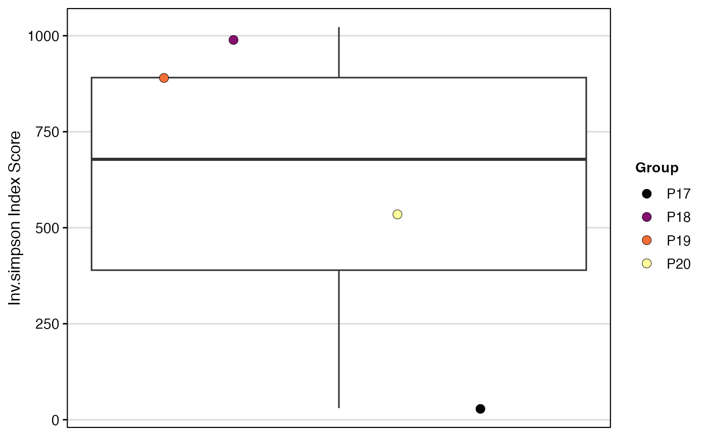
This can also be used if we want to explore just the lung-specific T cells by just subsetting the single-cell object. For the sake of this vignette, we can also look at setting proportion = TRUE to get a scaled output.
subset <- subset(scRep_example, Type == "L")
circles <- getCirclize(subset, group.by = "ident", proportion = TRUE)
grid.cols <- scales::hue_pal()(length(unique(subset@active.ident)))
names(grid.cols) <- levels(subset@active.ident)
chordDiagram(circles,
self.link = 1,
grid.col = grid.cols,
directional = 1,
direction.type = "arrows",
link.arr.type = "big.arrow")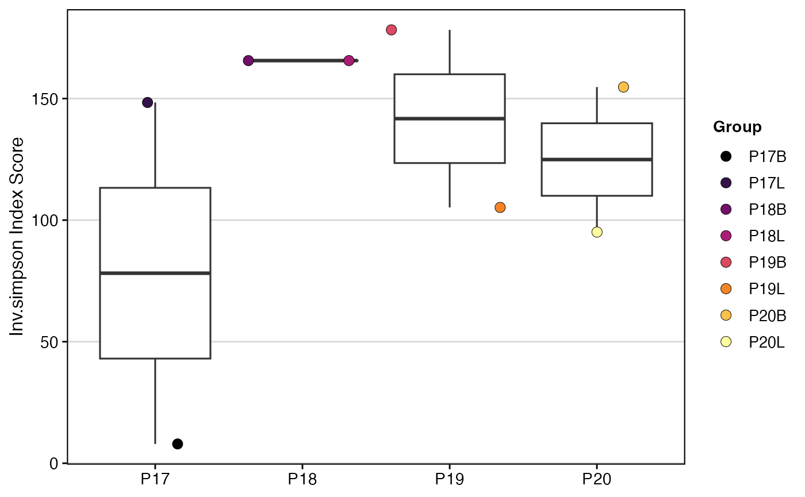
Quantifying Clonal Bias
StartracDiversity
From the excellent work by Lei Zhang, et al., the authors introduce new methods for looking at clones by cellular origins and cluster identification. Their STARTRAC software has been adapted to work with scRepertoire and please read and cite their excellent work.
In order to use the StartracDiversity() function, you
will need to include the product of the
combinedExpression() function. The second requirement is a
column header in the meta data of the Seurat object that has tissue of
origin. In the example data, type corresponds to the
column “Type”, which includes the “P” and “T” classifiers. The indices
can be subsetted for a specific patient or examined overall using the
by variable. Importantly, the function uses only the
strict definition of a clone of the VDJC genes and the CDR3 nucleotide
sequence.
The indices output includes:
- expa - Clonal Expansion
- migr - Cross-tissue Migration
- tran - State Transition
StartracDiversity(scRep_example,
type = "Type",
group.by = "Patient")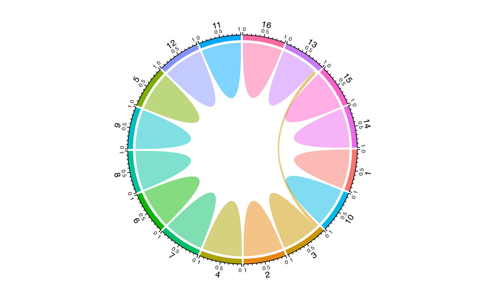
clonalBias
A new metric proposed by Massimo et al,
clonalBias(), like STARTRAC is a clonal metric that seeks
to quantify how individual clones are skewed towards a specific cellular
compartment or cluster.
split.by
- Variable used to calculate the baseline frequencies
group.by
- The compartment/variable used for the purpose of the comparison
min.expand
- Cut point for frequency (default = 10)
clonalBias(scRep_example,
cloneCall = "aa",
split.by = "Patient",
group.by = "seurat_clusters",
n.boots = 10,
min.expand =0)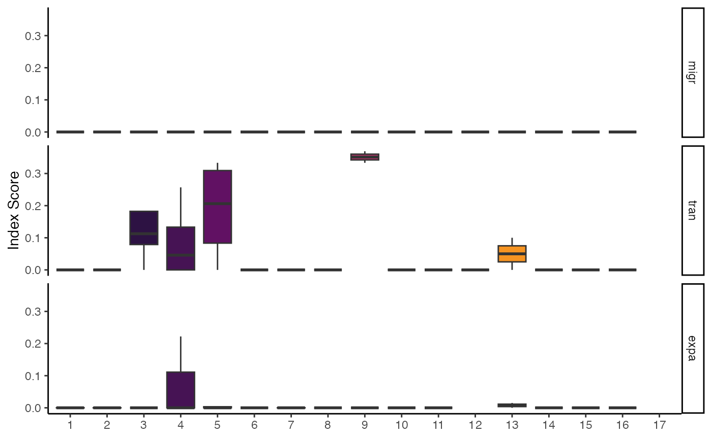
Clustering by Edit Distance
clonalCluster
The nucleotide or amino acid sequences of the chains can be used to
cluster clonotypes by examining the edit distance of the sequences. This
approach is underlying the combineBCR() function but now
can be applied to the B or T cell receptors at the level of nucleotides
(sequence = “nt”) or amino acids (sequence =
“aa”). It will add a cluster to the end of each list element by
generating a network connected by the similarity in sequence. This
network is directed by the threshold variable, where
0.85 is the normalized mean edit distance.
Edit-distance based clusters will have the following format:
- [chain:] + :Cluster + [number] e.g., TRA:Cluster.1
Cluster denotes if the cluster was called using the normalized Levenshtein distance, which takes the edit distance calculated between 2 sequences and divides that by the mean of the sequence lengths. Unconnected sequences will have NA values.
Basic use
sub_combined <- clonalCluster(combined.TCR[[2]],
chain = "TRA",
sequence = "aa",
threshold = 0.85,
group.by = NULL)
head(sub_combined[,c(1,2,13)])## barcode sample Type
## 1 P17L_AAACCTGAGGTGTTAA-1 P17L L
## 2 P17L_AAACCTGCACGTTGGC-1 P17L L
## 3 P17L_AAACCTGGTACGACCC-1 P17L L
## 4 P17L_AAACCTGGTTCGCTAA-1 P17L L
## 5 P17L_AAACCTGTCAGCACAT-1 P17L L
## 6 P17L_AAACCTGTCCGGCACA-1 P17L LClustering with a single-cell object
If performed over the number of samples, such as the list elements,
group.by can used to calculate only the clusters on the
setting of patient sample (group.by = “Patient”) or
tissue type (group.by = “Type”). This will add the
selected group to the beginning of the cluster designation. We can also
call clonalCluster() directly on a Single-Cell Object.
#Define color palette
colorblind_vector <- hcl.colors(n=7, palette = "inferno", fixup = TRUE)
scRep_example <- clonalCluster(scRep_example,
chain = "TRA",
sequence = "aa",
threshold = 0.85,
group.by = "Patient")
Seurat::DimPlot(scRep_example, group.by = "TRA_cluster") +
scale_color_manual(values = hcl.colors(n=length(unique(scRep_example@meta.data[,"TRA_cluster"])), "inferno")) +
Seurat::NoLegend() +
theme(plot.title = element_blank())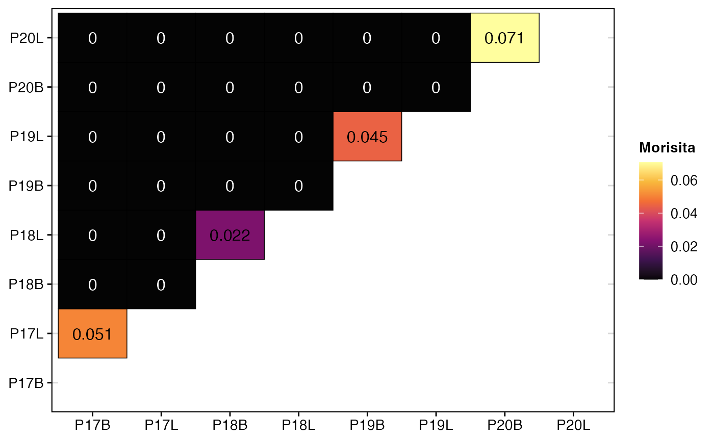
Using clonalCluster(), we can also return an igraph
object of all the related sequences using exportGraph =
TRUE. The returned igraph object contains only the sequences that have
at least one connection with another sequence. The igraph can then be
directly visualized (below) or used for downstream analysis (see the
igraph website).
Returning an igraph object:
#Clustering Patient 19 samples
igraph.object <- clonalCluster(combined.TCR[c(5,6)],
chain = "TRB",
sequence = "aa",
group.by = "sample",
threshold = 0.85,
exportGraph = TRUE)
#Setting color scheme
col_legend <- factor(igraph::V(igraph.object)$group)
col_samples <- hcl.colors(3,"inferno")[as.numeric(col_legend)]
color.legend <- factor(unique(igraph::V(igraph.object)$group))
#Plotting
plot(
igraph.object,
vertex.size = sqrt(igraph::V(igraph.object)$size),
vertex.label = NA,
edge.arrow.size = .25,
vertex.color = col_samples
)
legend("topleft", legend = levels(color.legend), pch = 16, col = unique(col_samples), bty = "n")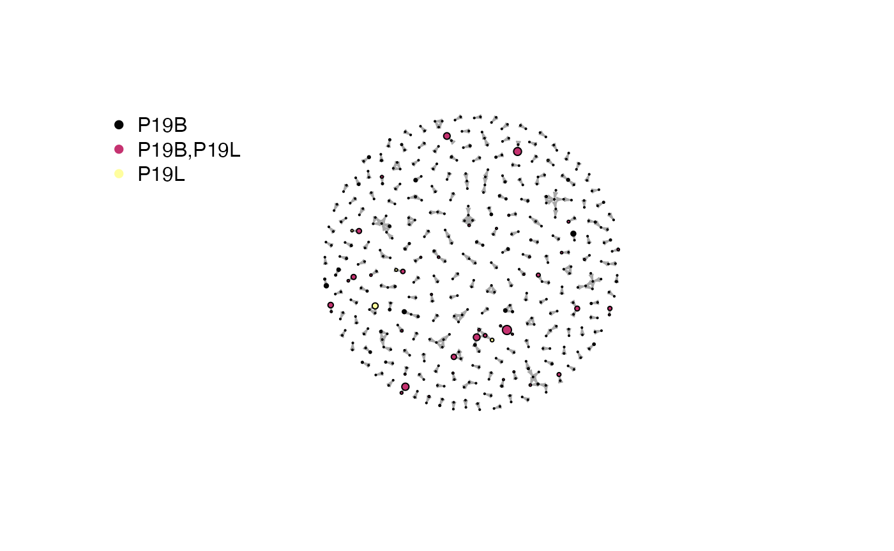
Conclusion
This has been a general overview of the capabilities of scRepertoire from the initial processing and visualization to attach to the mRNA expression values in a single-cell object. If you have any questions, comments, or suggestions, please visit the GitHub repository.
Session Info
## R version 4.4.1 (2024-06-14)
## Platform: aarch64-apple-darwin20
## Running under: macOS Sonoma 14.6
##
## Matrix products: default
## BLAS: /Library/Frameworks/R.framework/Versions/4.4-arm64/Resources/lib/libRblas.0.dylib
## LAPACK: /Library/Frameworks/R.framework/Versions/4.4-arm64/Resources/lib/libRlapack.dylib; LAPACK version 3.12.0
##
## locale:
## [1] en_US.UTF-8/en_US.UTF-8/en_US.UTF-8/C/en_US.UTF-8/en_US.UTF-8
##
## time zone: America/Chicago
## tzcode source: internal
##
## attached base packages:
## [1] stats4 stats graphics grDevices utils datasets methods
## [8] base
##
## other attached packages:
## [1] scales_1.3.0 circlize_0.4.16
## [3] ggraph_2.2.1 scRepertoire_2.2.1
## [5] scater_1.32.1 ggplot2_3.5.1
## [7] scuttle_1.14.0 SingleCellExperiment_1.26.0
## [9] SummarizedExperiment_1.34.0 Biobase_2.64.0
## [11] GenomicRanges_1.56.1 GenomeInfoDb_1.40.1
## [13] IRanges_2.38.1 S4Vectors_0.42.1
## [15] BiocGenerics_0.50.0 MatrixGenerics_1.16.0
## [17] matrixStats_1.3.0 BiocStyle_2.32.1
##
## loaded via a namespace (and not attached):
## [1] cubature_2.1.1 RcppAnnoy_0.0.22
## [3] later_1.3.2 splines_4.4.1
## [5] tibble_3.2.1 polyclip_1.10-7
## [7] fastDummies_1.7.4 lifecycle_1.0.4
## [9] globals_0.16.3 lattice_0.22-6
## [11] MASS_7.3-61 magrittr_2.0.3
## [13] plotly_4.10.4 sass_0.4.9
## [15] rmarkdown_2.27 jquerylib_0.1.4
## [17] yaml_2.3.10 httpuv_1.6.15
## [19] Seurat_5.1.0 sctransform_0.4.1
## [21] spam_2.10-0 spatstat.sparse_3.1-0
## [23] sp_2.1-4 reticulate_1.38.0
## [25] pbapply_1.7-2 cowplot_1.1.3
## [27] RColorBrewer_1.1-3 abind_1.4-5
## [29] zlibbioc_1.50.0 Rtsne_0.17
## [31] purrr_1.0.2 hash_2.2.6.3
## [33] tweenr_2.0.3 evmix_2.12
## [35] GenomeInfoDbData_1.2.12 ggrepel_0.9.5
## [37] irlba_2.3.5.1 spatstat.utils_3.0-5
## [39] listenv_0.9.1 iNEXT_3.0.1
## [41] goftest_1.2-3 MatrixModels_0.5-3
## [43] RSpectra_0.16-2 spatstat.random_3.3-1
## [45] fitdistrplus_1.2-1 parallelly_1.38.0
## [47] pkgdown_2.1.0 DelayedMatrixStats_1.26.0
## [49] leiden_0.4.3.1 codetools_0.2-20
## [51] DelayedArray_0.30.1 ggforce_0.4.2
## [53] shape_1.4.6.1 tidyselect_1.2.1
## [55] UCSC.utils_1.0.0 farver_2.1.2
## [57] ScaledMatrix_1.12.0 viridis_0.6.5
## [59] spatstat.explore_3.3-1 jsonlite_1.8.8
## [61] BiocNeighbors_1.22.0 tidygraph_1.3.1
## [63] progressr_0.14.0 ggridges_0.5.6
## [65] ggalluvial_0.12.5 survival_3.7-0
## [67] systemfonts_1.1.0 tools_4.4.1
## [69] ragg_1.3.2 stringdist_0.9.12
## [71] ica_1.0-3 Rcpp_1.0.13
## [73] glue_1.7.0 gridExtra_2.3
## [75] SparseArray_1.4.8 xfun_0.48
## [77] dplyr_1.1.4 withr_3.0.1
## [79] BiocManager_1.30.23 fastmap_1.2.0
## [81] fansi_1.0.6 SparseM_1.84-2
## [83] digest_0.6.36 rsvd_1.0.5
## [85] mime_0.12 R6_2.5.1
## [87] textshaping_0.4.0 colorspace_2.1-1
## [89] scattermore_1.2 tensor_1.5
## [91] spatstat.data_3.1-2 utf8_1.2.4
## [93] tidyr_1.3.1 generics_0.1.3
## [95] data.table_1.15.4 graphlayouts_1.1.1
## [97] httr_1.4.7 htmlwidgets_1.6.4
## [99] S4Arrays_1.4.1 uwot_0.2.2
## [101] pkgconfig_2.0.3 gtable_0.3.5
## [103] lmtest_0.9-40 XVector_0.44.0
## [105] htmltools_0.5.8.1 dotCall64_1.1-1
## [107] bookdown_0.41 SeuratObject_5.0.2
## [109] png_0.1-8 spatstat.univar_3.0-0
## [111] ggdendro_0.2.0 knitr_1.48
## [113] rstudioapi_0.16.0 reshape2_1.4.4
## [115] rjson_0.2.21 nlme_3.1-166
## [117] GlobalOptions_0.1.2 zoo_1.8-12
## [119] cachem_1.1.0 stringr_1.5.1
## [121] KernSmooth_2.23-24 miniUI_0.1.1.1
## [123] parallel_4.4.1 vipor_0.4.7
## [125] desc_1.4.3 pillar_1.9.0
## [127] grid_4.4.1 vctrs_0.6.5
## [129] RANN_2.6.1 promises_1.3.0
## [131] VGAM_1.1-11 BiocSingular_1.20.0
## [133] beachmat_2.20.0 xtable_1.8-4
## [135] cluster_2.1.6 beeswarm_0.4.0
## [137] evaluate_0.24.0 isoband_0.2.7
## [139] truncdist_1.0-2 cli_3.6.3
## [141] compiler_4.4.1 rlang_1.1.4
## [143] crayon_1.5.3 future.apply_1.11.2
## [145] labeling_0.4.3 plyr_1.8.9
## [147] fs_1.6.4 ggbeeswarm_0.7.2
## [149] stringi_1.8.4 deldir_2.0-4
## [151] viridisLite_0.4.2 BiocParallel_1.38.0
## [153] assertthat_0.2.1 munsell_0.5.1
## [155] gsl_2.1-8 lazyeval_0.2.2
## [157] spatstat.geom_3.3-2 quantreg_5.98
## [159] Matrix_1.7-0 RcppHNSW_0.6.0
## [161] patchwork_1.2.0 sparseMatrixStats_1.16.0
## [163] future_1.34.0 shiny_1.9.1
## [165] highr_0.11 evd_2.3-7
## [167] ROCR_1.0-11 igraph_2.0.3
## [169] memoise_2.0.1 bslib_0.8.0